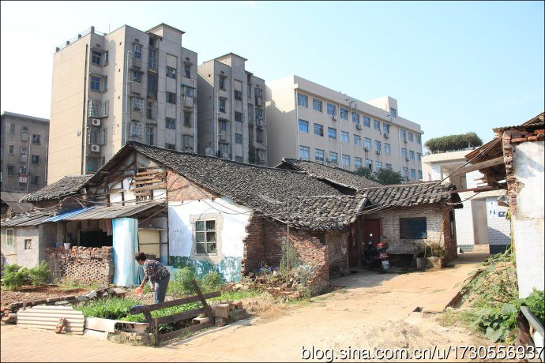

前言与使用说明
本手册的定位、读者对象、阅读路径与体例约定
手册要解决的三个接手问题
本手册用于承接片区策划的既有成果，将其中的表单、指标、口径、组织方式与工具方法固化为可查、可照做、可交接的作业文件
- 成果已成型——城正街、建设路两个片区的策划已完成一轮，形成分章成果十件与策划方案一份。
- 方法已跑通——一套表单、一套指标体系（V19）、一套数据来源评估表（V5）与一套九阶段流程已在项目中实际使用。
- 资产已散置——上述内容分布在十二类目录、上百个文件中。新接手人员辨识“哪个文件管什么、哪个数字从哪取、哪版指标为现行版”，通常需要两至三周。
- 本手册的作用——把散置经验收敛为一份索引与规则并存的册子，降低接手成本，减少重复讨论与返工。
手册管什么、不管什么
不同角色该读哪几章
表0-1 按角色划分的阅读路径
| 角色 | 阅读范围 | 使用目的 |
|---|---|---|
| 项目负责人 | 第一章、第二章、第八章、第十章 | 掌握成果深度、五道门节点与签认事项；对外协调时可直接引用文号与条款。 |
| 项目经理 | 第三章至第八章 | 按阶段派任务、按表单收数据、按编号建底座、按校核清单验收。 |
| 规划／设计人员 | 第三章、第五章、第六章 | 掌握体检指标口径、项目生成逻辑与设计引导的管控要求。 |
| 内业与 GIS 人员 | 第五章、第七章 | 掌握指标体系、字段结构、编号规则与入库流程。 |
| 新接手人员 | 卷首、第一章，再按附录E检索 | 通过“需求—文件对照”直接定位所需章节与文件，不逐章通读。 |
体块、标记与符号的读法
- 三级编号——章以“第一章”计，节以“1.1”计，条以“1.1.1”计；表格按章编号（如“表5-3”），不设插图编号，图形信息以文字与表格承载。
- 政策引用——正文采用“（文件名，文号）”随文标注，文号统一使用六角括号〔〕、四位年份；完整清单见附录A。
- 文件路径——节末以灰框列出对应文件，路径相对移交包根目录，根目录为
00_移交_项目负责人_20261123（移交包根目录）。 - 四类提示块——青色为方法要点，金色为口径规则，红色为风险与禁止事项，灰蓝为文件索引；前三类属约束性内容。
- 条目编号——凡以“01、02……”编号的条目为可执行事项，可按序核对；以“·”标注的条目为并列要点，不构成先后顺序。
内容来自哪两轮实际项目
本手册的事实与口径来自四类文本，凡相互不一致时按下列顺序取值
- 政策文件——以《城市更新规划编制导则》（建办科〔2025〕46号）及湖南省、湘潭市相关技术文件为准。
- 成果原件——城正街分章成果十件、建设路策划方案一份，用于确认既有做法与定值。
- 项目自有工具——片区体检指标体系（V19）、指标数据来源评估表（V5）、五张调查表与问题清单模板。
- 技能包文本——片区策划助手（V3.1）的流程、版式与图表规范，用于方法复现与自动化作业。
本章对应文件与路径展 开 清 单
00_片区策划后续工作操作指南.docx（阶段与任务原型）00_移交清单与说明.docx（移交范围与使用提示）11_片区策划Skill_可移植\片区策划助手\references\01_片区城市更新策划全流程操作指南.md（九阶段原文本）
十章与六附录的分工
总则
片区策划的定义、在规划实施中的位置、成果构成与术语口径
片区策划是什么、要交什么
片区策划是城市更新实施体系的中间层：上承城市更新专项规划确定的目标、规模与底线，下启项目库、年度实施计划与工程设计。

实景 · 现状调查照片
- 性质——属更新行动方案，不是修建性详细规划，不直接出施工图；亦不是项目建议书，不以单个项目为对象。
- 成果——一份片区更新行动方案，加一张可申报的项目清单。
- 四项必答——现状如何、问题在哪、更新成什么样、由哪些项目在多长时序内实现。
- 组织方式——市住建部门统筹，区政府配合，编制单位承担；成果经审查后作为项目入库与资金申报的依据。
- 本手册覆盖对象——城正街历史文化街区、建设路工业更新片区；两片区成果既是实施依据，也是后续片区的示范样本。
夹在专项规划与工程设计之间
表1-1 片区策划与上下位文件的关系
| 层级 | 文件／成果 | 对本片区策划的约束 |
|---|---|---|
| 上位法定规划 | 国土空间总体规划、控制性详细规划 | 用地性质、容积率、红线宽度、公共设施与绿地布局不得突破；控规未落实内容须单列说明及原因 |
| 专项规划 | 城市更新专项规划、《湘潭市城市更新专项规划文本》 | 片区是否列入重点片区、更新方式（保护修缮／整治提升／拆除重建／拆整结合）、规模上限 |
| 保护类规划 | 《城正街历史文化街区保护规划》 | 保护区划（核心保护范围、建设控制地带）、高度与风貌控制、文保与历史建筑保护要求，属强制性内容 |
| 本层 | 片区策划（本手册对象） | 体检结论、功能定位、项目库、投资估算、实施时序、设计引导 |
| 下位 | 项目建议书／可研、年度实施计划、工程设计 | 项目规模、投资、实施主体与资金来源由本层确定后逐项深化 |
六册分册与每册的深度底线
成果按六章加附录组织，每章单独成册，可独立修改与汇报，合并即为完整方案此分章结构为项目既定标准，后续片区沿用
表1-2 分章成果的内容与深度要求
| 章 | 必须回答的问题 | 深度判据 |
|---|---|---|
| 01 项目概况 | 片区在哪、范围多大、上位有哪些要求、本底资源是什么 | 范围线可落图；面积、栋数、户数、人口有出处；上位规划要点摘要到条 |
| 02 片区体检 | 现状处于什么水平、短板在哪、潜力在哪 | 基础数据14项、基础指标51项、特色指标10项逐项有值或有缺口说明；问题清单每条可落图 |
| 03 功能业态 | 更新成什么、由什么业态支撑 | 定位有推导过程；业态有构成与时序；与资源本底一一对应 |
| 04 更新项目 | 做哪些项目、投资多少、资金从哪来、先后顺序 | 项目库六项填满（名称、类型、规模、投资、主体、时序）；投资有取费依据；每个项目对应问题清单条目 |
| 05 设计引导 | 建成什么形态、哪些可做、哪些不可做 | 分区、建筑、公共空间、标识、市政五类管控要求可检查；附负面清单 |
| 06 附录 | 支撑材料有哪些 | 指标表、图纸、项目清单、政策依据目录齐备 |
同一件事只用一个说法
片区策划的常见返工多源于同词异指下列术语在全文统一使用，不再另作解释
表1-3 基本术语
| 术语 | 定义 | 使用规则 |
|---|---|---|
| 片区 | 本轮策划的工作范围，以划定边界为准 | 面积以保护规划或划定文件为准，不得以图上量算替代 |
| 单元 | 片区内的更新单元，一般按社区或成片地块划分 | 项目落位与投资汇总以单元为中间层 |
| 小区／院落 | 居住点位，“是否缺”类指标的判定单元 | 一行一个小区；名称须与人口表、质量评定表逐字一致 |
| 栋 | 建筑单体，数据颗粒度的最小单元 | 一栋一行；属性、问题、工程量均挂到栋 |
| 点位 | 非建筑类设施或问题位置，如井盖、消火栓、积水点 | 按点计数，不折算长度或面积 |
| 口径 | 一项数据的定义、范围、算法与取值总称 | 一经确认即锁定；变更须在附录D登记 |
| 台账 | 逐条登记的明细表，如危房台账、修缮台账 | 台账为原始凭证；汇总表由台账生成，不得反向修改台账 |
本章对应文件与路径展 开 清 单
06_原始成果_城正街分章\（分章成果十件）08_基础数据_城正街\01_上位规划\城正街历史文化街区保护规划.pdf10_市级基础数据库\02_上位规划与索引\上位规划约束条件索引表.xlsx
编制依据
国家、省、市、标准四层依据及引用规则
四层依据各自管方向、管技术、管落地
编制依据分四级：法律法规、部门规章与技术标准、地方政策与规划、上位成果与本片区既有结论。引用须写全文件名与文号，不写“相关规范”。
实景 · 保护规划对象
表2-1 政策文件的四层结构
| 层级 | 份数 | 解决什么问题 | 用错会怎样 |
|---|---|---|---|
| 国家层面 | 9 | 定方向、定规则、定资金口径：什么叫城市更新、规划怎么编、中央资金怎么给 | 方案立意偏离国家导向，申报中央资金时口径不符 |
| 湖南省层面 | 20 | 定技术指南、工具箱、申报通道：体检怎么做、专项规划怎么编、钱从哪里报 | 指标取错版本，申报错过窗口，审查要点漏项 |
| 湘潭市层面 | 3 | 定本地上位要求与工作组织：哪个片区、什么程序、谁审查 | 与地方专项规划冲突，成果不被受理 |
| 标准与参考 | 6 | 定技术方法与表达：团体标准、培训课件、补充标准件 | 把参考当依据，出现无出处的“标准要求” |
国家层面 9 份文件管什么
表2-2 国家层面政策文件及用途
| 序 | 文件名称 | 文号／时间 | 核心要求与在本手册中的用位置 |
|---|---|---|---|
| 1 | 中共中央办公厅、国务院办公厅关于持续推进城市更新行动的意见 | 2025年5月 | 城市更新的总纲：建立“城市体检—更新规划—片区策划—项目库—年度计划”的实施链条，明确八项重点任务。用于第一章定位、第三章技术路线、第八章组织。 |
| 2 | 城市更新“十五五”规划 | 国务院，2026年5月 | 五年期的目标指标、重点区域与重大工程安排。用于功能定位与项目库的方向校验，判断片区项目是否落在国家盘子内。 |
| 3 | 城市更新规划编制导则 | 建办科〔2025〕46号 | 本手册最主要的技术依据：规定城市更新规划与片区策划的内容框架、深度、成果形式；给出体检与更新联动的技术要求。用于第一章1.3、第三章全章、第五章指标体系。 |
| 4 | 城市更新规划编制工作手册 | 随导则印发 | 导则的释义与案例集，逐条解释“怎么写、写到什么程度”。用于第三章各阶段的具体写法与表格样式。 |
| 5 | 中央财政城镇保障性安居工程补助资金管理办法 | 财综〔2024〕15号 | 老旧小区改造、危房改造等中央补助的资金口径、支持范围与禁止事项。用于第四章项目生成的资金匹配、第八章阶段四。 |
| 6 | 城市燃气管道等老化更新改造和保障性安居工程中央预算内投资专项管理暂行办法 | 发改投资规〔2022〕910号 | 中央预算内投资的支持范围、申报条件、补助比例。用于燃气、排水等市政类项目的资金渠道判定。 |
| 7 | 关于开展城市更新示范工作的通知 | 财办建〔2024〕24号 | 示范城市的评选条件与资金支持方式，可作为片区争取上级支持的背景依据。用于第一章定位与第九章汇报口径。 |
| 8 | 中央预算内投资补助和贴息项目管理办法 | 发改委2025年第38号令 | 中央预算内资金的申请、下达、监管程序。用于项目库“拟申请中央预算内资金”一列的合规性判断。 |
| 9 | 住房城乡建设部关于全面开展城市体检工作的指导意见 | 2023年11月 | 体检的四个层级（住房、小区、社区、城区）与技术方法，是51项基础指标按维度归口的源头。用于第五章5.1、5.3。 |
湖南省 20 份文件怎么用
省级文件分三类：实施类（省政府及部门的实施意见与三年行动方案）、技术类（体检指南、专项规划指南、审查指南）、工具与资金类（政策工具箱、资金申报手册、专项资金通知）。使用时先看实施类定方向，再看技术类定方法，最后看工具类定钱。
表2-3 湖南省层面政策文件及用途
完整表格（21 行）展 开 查 看
| 序 | 文件名称 | 文号 | 核心内容与用处 |
|---|---|---|---|
| 1 | 湖南省人民政府办公厅关于持续推进城市更新行动的实施意见 | 湘政办发〔2025〕49号 | 省级实施总纲，明确重点片区、项目库、资金与考核要求。引用地方政策时的第一顺位文件。 |
| 2 | 湖南省城市更新三年行动实施方案（2026—2028年） | 湘政办发〔2026〕45号 | 三年任务分解到年度与市州，是本片区项目排时序的上级约束。用于第八章阶段四、阶段五。 |
| 3 | 关于申报2026年省级专项资金支持城市更新片区前期工作项目的通知 | 湘建计函〔2026〕82号 | 片区前期工作经费的申报条件、材料清单、时限。策划阶段本身的经费来源在此，务必逐条对照准备。 |
| 4 | 关于开展2026年省级城市更新专项资金（城市更新样板片区）项目申报的通知 | 湘01（省住建厅） | 样板片区的申报条件、评分要点、资金额度。用于判断本片区是否具备申报条件、缺哪几项材料。 |
| 5 | 关于征求《湖南省城市更新行动（2026—2028年）实施方案》意见的函 | 湘02 | 方案形成过程的版本，用于比对正式稿的变化，理解政策取向。 |
| 6 | 关于征求《湖南省城市更新政策工具箱》意见的函 | 湘03 | 工具箱的征求意见稿，与湘11正式版配套看。 |
| 7 | 推进建设用地混合与兼容利用、既有建筑功能转换的指导意见（试行） | 湘04 | 项目落地的关键政策：允许用地混合、建筑功能转换的条件与程序。历史街区“住改商”“厂房改文创”必须依此办理。 |
| 8 | 关于支持老旧住房自主更新的通知（征求意见稿） | 湘05 | 居民自主更新、原拆原建的意愿组织与审批路径。用作与湘15正式稿的对照。 |
| 9 | 湖南省三部门关于支持老旧住房自主更新的通知 | 湘建保〔2026〕97号 | 正式稿：自主更新的适用范围、申请主体、资金与审批。用于危房、非成套住宅的处置方案比选。 |
| 10 | 湖南省城市体检工作技术指南（试行） | 湘06，2026年6月 | 51项基础指标的直接出处：附件B指标释义与阈值、附件C补充指标、各类填报表T1—T22。第五章逐项引用的“省指南条目”均指此件。 |
| 11 | 湖南省2026年城市体检工作方案（印发通知） | 湘07 | 年度体检的组织方式、时间节点、上报口径。用于第八章阶段三的时序安排。 |
| 12 | 湖南省城市更新专项规划编制技术指南 | 湘08 | 专项规划的编制要求，片区策划须与之衔接（目标指标、片区划定、项目库口径）。用于第二章2.6与第三章阶段四。 |
| 13 | 长沙市城市更新片区策划审查工作指南 | 湘09 | 审查尺度的参照：片区策划审查的要点、评分与常见退回原因。用于第十章送审前自检。 |
| 14 | 城市更新项目资金申报工作手册（2026年6月） | 湘10 | 各类资金的申报流程、材料清单、常见问题。用于项目库资金匹配与申报准备。 |
| 15 | 湖南省城市更新工具箱（2026年8月） | 湘11 | 政策工具的分类索引：土地、规划、财政、金融、审批五类工具及适用情形。用于方案阶段的政策适配。 |
| 16 | 湖南省国土空间规划编制计费标准 | 湘12 | 规划编制取费的参考依据，用于投资估算中的前期费用科目。 |
| 17 | 湖南省城市更新典型案例集（2026年第一批） | 湘13 | 省内可比案例，用于功能业态的对标与汇报说理，不作数据依据。 |
| 18 | 湖南省绿色完整居住社区创建行动方案 | 湘建设〔2023〕61号 | 完整社区创建的指标与程序，是“三、开展完整社区建设”8项指标的落地依据。 |
| 19 | 湖南省绿色完整居住社区建设指南 | 湘17 | 设施配置标准与建设指引，社区级设施面积阈值的来源之一。 |
| 20 | 湖南省人民政府公报2025年第24期 | 湘14附 | 刊载湘政办发〔2025〕49号原文，作引用留档用。 |
湘潭市 3 份文件定哪些事
表2-4 湘潭市地方文件
| 序 | 文件名称 | 作用 |
|---|---|---|
| 1 | 湘潭市城市更新专项规划文本（0327版） | 本地上位规划：片区划定、更新方式、规模与设施布局。策划结论须与之对齐，冲突处须说明。 |
| 2 | 关于编制湘潭市城市更新重点片区策划的工作方案 | 本地工作组织：谁组织、谁编制、审什么、报什么。第八章的角色与节点据此设置。 |
| 3 | 同上（市规划建筑设计院版本，2026年5月） | 编制单位内部执行版，含任务书与成果清单，可作为合同附件核对交付范围。 |
6 份标准只作方法参考
表2-5 标准与参考文件
| 序 | 文件 | 用途与使用限制 |
|---|---|---|
| 1 | 城市更新规划技术指南（中国城市规划协会团体标准，征求意见稿） | 方法借鉴，用于成果框架比较。团体标准征求意见稿不得作为强制依据引用，正文引用须注明“参考”。 |
| 2 | 城市更新规划编制与项目策划储备机制（专题培训课件） | 项目储备与打包的方法论，用于第四章项目生成。 |
| 3 | 加快构建城市更新规划实施体系促进实施落地（专题培训课件） | 实施机制与政策衔接，用于第八章阶段六。 |
| 4 | 城市更新（补充标准件，2025-12-17） | 补充技术规定，涉及分类与统计口径时查阅。 |
| 5 | 城市更新规划编制导则（单行本） | 建办科〔2025〕46号的单行印刷本，便于现场翻阅。 |
| 6 | 政策法规索引表.xlsx | 目录表（当前为空表头），本手册附录A即为其填写版，可直接替代使用。 |
依据技术标准方面，本手册直接引用的国家标准与行业标准有：《城市居住区规划设计标准》GB 50180-2018（服务半径、五分钟／十分钟／十五分钟生活圈）、《城市环境卫生设施规划标准》GB/T 50337-2018（公厕与中转站）、《无障碍设计规范》GB 50763-2012（适老化与无障碍）、《城镇燃气规划规范》GB/T 51098-2015（未通气判定）、《完整居住社区建设标准（试行）》（社区设施面积阈值）。
引用政策要写全名与文号
2. 文号写法统一：机关代字＋六角括号年份＋序号，如建办科〔2025〕46号；无文号的写发布机关与时间。
3. 征求意见稿不作依据。湘02、湘03、湘05及参01均属征求意见稿，只能作为背景说明，不得作为判定依据。
4. 引用到条。正文引用指标阈值时，须能指出“省指南附件B第X项”，不能只写“按省指南要求”。
本章对应文件与路径展 开 清 单
07_政策文件与规范\01_国家层面\（9份）07_政策文件与规范\02_湖南省层面\（20份）07_政策文件与规范\03_湘潭市地方文件\（3份）07_政策文件与规范\04_参考与技术文献\（3份）07_政策文件与规范\05_标准与编制指南\（3份）
技术路线
从项目启动到汇报交付的九个阶段及每阶段出口
启动阶段先定边界、团队与计划
九阶段各有输入、输出与责任角色，以节点成果交接推进，不按时间来推。前一阶段成果未确认，后一阶段不开工。
实景 · 项目工作照
要做启动阶段不产出技术内容，但确定后续全部工作的边界。四项内容须落定：任务边界、团队与分工、工作计划、目录与命名。
表3-2 启动阶段动作
| 序 | 动作 | 具体要求 |
|---|---|---|
| 1 | 确认任务边界 | 片区名称、范围、编制目的、成果形式（汇报文件／文本／两者）、报送对象、时间要求、需回避事项，逐条写入任务确认单 |
| 2 | 组建团队 | 六类角色：项目负责人、项目经理、规划、设计、数据（内业GIS）、文本。一人可兼多岗，但负责人、项目经理、内业三类不宜同一人兼任 |
| 3 | 制定计划 | 按九阶段倒排，标出五个节点与对外汇报时点，预留15%—20%时间作校核与修改 |
| 4 | 建目录与规则 | 按移交包的十二类结构建目录；命名“片区_文件_版本_日期_编制人”；定版本规则（过程稿可写、定稿只读） |
收资阶段按清单向九个部门取数
说明这是全流程最关键的一段。数据质量决定后面所有结论，收资本身有方法：先建清单，再按“表—部门—现场—内业”四条途径分工，最后做交叉验证。
3.2.1指标数据
通用口径按八类整理：人口、用地、建筑、历史文化、公共服务、基础设施、交通、特色资源。本项目的具体载体是“基础数据14项＋基础指标51项＋特色指标10项”，逐项来源见第五章，不再另设一套清单。不要为每个指标单独设计表，表越多、重复越多、口径越乱。
3.2.2项目清单
项目清单按十六个字段收集，其中“总投资”为合并表头，下含七个子列（总投资、中央财政补助、拟申请中央预算内、超长期特别国债、专项债、地方财政、其他）。字段结构见第七章表7-3。
操作收集顺序有五级：已有项目库 → 规划文件中已列项目 → 已立项项目的可研与实施方案 → 部门年度与五年项目计划 → 现场踏勘与街道访谈补充。前三级给“已定的项目”，后两级给“该有但没有的项目”。
3.2.3投资估算与资金匹配
依据无准确投资的项目，按同类项目单位造价类比；有可研的用可研数；两者都没有的，先列规模、再套单价、最后注明“待可研核定”。资金匹配按七类渠道逐项对照政策：中央财政补助（财综〔2024〕15号）、中央预算内（发改投资规〔2022〕910号、38号令）、超长期特别国债、专项债、地方财政、社会资本、居民出资。校验规则：总投资＝七类资金之和，不得留“其他”兜底超过10%。
3.2.4交叉验证
表3-3 交叉验证规则
| 情形 | 处理 |
|---|---|
| 两来源差异≤5% | 取二者均值或取权威来源，注明两值 |
| 差异＞5% | 标“待核实”，追查差异原因（口径不同／年份不同／范围不同），不得直接取平均 |
| 规划值 vs 现状值 | 分别列示，规划值注明“规划”，现状值注明“实测”，正文结论以现状为准 |
| 合计不等于分项之和 | 逐项重算，找出漏项或重复项，不调整总数去凑分项 |
体检阶段把现状判成问题清单
体检不是罗列数据，是把数据变成判断。分五步：展示本底、评价指标、诊断问题、汇总需求、评估潜力。前两步是“是什么”，后三步是“所以呢”。
表3-4 体检阶段动作与判据
| 序 | 动作 | 要求 | 判据 |
|---|---|---|---|
| 1 | 基础数据展示 | 人口、用地、建筑、权属、闲置资产五项本底，按街道—社区—小区三级分解 | 每个数有出处；分解后合计等于总数 |
| 2 | 指标评价 | 51项基础指标逐项定值，按达标／基本达标／不达标／严重不达标四级判定 | 无空缺值，取不到的注明缺口而非估算 |
| 3 | 特色指标评价 | 历史文化街区型评10项，工业型换为产业与厂房类 | 与保护规划认定成果一致，不另做普查 |
| 4 | 问题诊断 | 归为五类：历史保护、人居环境、产业能级、基础设施、体制机制；每条列成因与影响范围 | 每条问题能落到图上的位置，能对应到指标值 |
| 5 | 需求汇总 | 居民（问卷）、政府（部门座谈）、产权单位（访谈）、市场主体（调研）四方诉求 | 诉求可按小区统计，与问卷样本对应 |
| 6 | 潜力评估 | 历史资源、存量资产、土地与空间三类潜力，评分后划高／中／低潜力区 | 潜力区边界可上图，与项目落位一致 |
业态阶段定功能、算体量、排时序
要做功能业态回答“更新成什么”。它不能凭空立意，须由三样东西推导：资源本底（有什么）、上位要求（允不允许）、市场需求（有没有人用）。推导过程要写出来，结论才站得住。
表3-5 功能业态阶段动作
| 序 | 动作 | 内容与方法 |
|---|---|---|
| 1 | 价值基因 | 从历史遗存、存量资产、非遗老字号、生态区位、上位要求五个维度提炼，找出“别的片区没有”的那一条 |
| 2 | 案例对标 | 选3—5个类型相近、规模相当、有运营数据的案例，比定位、业态、运营模式、投入产出，提炼可借鉴与不可借鉴之处 |
| 3 | 定位与IP | 一句定位（不超过25字）＋1—3个核心IP，每个IP写内涵、载体、利用方式 |
| 4 | 产业体系 | 按“核心IP板块×业态类型”搭结构，写清主导业态、配套业态、禁止业态 |
| 5 | 空间布局 | 总平面、空间结构（一核两带三片多点之类）、功能分区、交通组织四件套，分区须与项目落位对应 |
项目阶段把问题折成可申报项目
项目生成是策划的核心环节。逻辑链是：体检问题 → 更新需求 → 功能定位 → 空间落位 → 项目打包 → 投资与时序。项目不是想出来的，是从问题清单里长出来的。
3.5.1三大策略（本项目已锁定口径）
表3-6 三大策略及简称
| 策略 | 简称（页面标题用） | 全称（正文论述用） | 覆盖的项目类型 |
|---|---|---|---|
| 策略一 | 策略一·历史活化 | 历史文化保护传承与活化利用 | 文保修缮、历史建筑活化、闲置资产盘活、风貌整治、主街与街巷提升、标识体系 |
| 策略二 | 策略二·品质提升 | 人居环境改善与居住品质提升 | 危房改造、老旧小区改造、完整社区、老旧街区更新 |
| 策略三 | 策略三·基础补位 | 基础设施完善与城市功能补短板 | 养老、教育、消防、停车、市政管网、文旅配套 |
使用规则：页面标题用简称，正文论述用全称，两者不混用。策略三的總览页必须保留，其余总览页可视资料量合并。
3.5.2项目库
要做项目库十六字段，每个项目六项必填（名称、类型、规模、投资、实施主体、时序），其余为分类与统计字段。每个项目须挂一条问题清单编号，做到“问题—项目”双向可查。城正街的做法是：先按策略分三组，组内按空间连片打包，一个包内的项目共用实施主体与时序。
3.5.3时序与资金
数据时序按“紧急程度、前期进度、资金落实”三条判断，分近期（1—2年）、中期（3—4年）、远期（5年以上）。资金按七类渠道匹配，每类注明适用政策与申报窗口。社会资本参与只列“有收益、可运营”的项目，模式写清特许经营、运营合作、联合开发或主理人孵化。
设计阶段给出空间与风貌管控要求
设计引导不是设计方案，是管控要求：什么能做、做到什么程度、什么不能做。五类内容：分区风貌、建筑改造、公共空间、标识景观、市政与公服系统。
表3-7 设计引导的五类内容
| 类别 | 要写什么 | 判据 |
|---|---|---|
| 分区风貌 | 核心保护范围、建控地带、协调区、一般区域各自的高度、体量、色彩、材质、细节要求 | 与保护规划一致；有正负面示例 |
| 建筑改造 | 五类建筑（文保／历史／传统风貌／协调／不协调）对应五种措施（保护／修缮／改善／保留／整治） | 每类有材料、工艺、功能与审批要求 |
| 公共空间 | 四级体系（城市级／社区级／口袋公园／街头绿带），主客共享、文化植入、海绵、全龄友好 | 每级有面积、设施、铺装、绿化指标 |
| 标识景观 | 标识系统、街道家具、景观设施、夜景照明 | 样式、材质、位置、密度可检查 |
| 系统引导 | 交通（慢行、停车、旅游交通）、市政（雨污、管线、消防）、公服（生活圈、旅游服务） | 与项目库一一对应 |
版式阶段把结论压进固定版式
版式制作是把内容装进页面。四条纪律：母版先行、逐页对表、图表合规、图片对位。
表3-8 版式阶段动作
| 序 | 动作 | 要求 |
|---|---|---|
| 1 | 定风格与母版 | 一套主色（不超过三色）＋两套母版（内容页、章节页），字号、行距、边距一次定死 |
| 2 | 逐页对照 | 按逐页大纲逐页出：页题、关键句、正文、数据、图；每页内容有来源 |
| 3 | 图表 | 柱、饼、折线、雷达、热力、流程、关系、地图八类，标注标题、单位、来源；数据项多时用表 |
| 4 | 图片 | 按索引取图，现状照片可裁，GIS 图不裁不拉伸；同一图不跨节复用 |
校核阶段查数据、口径与逻辑
要做校核分四类：内容30项、数据15项、版式20项、逻辑10项，共75项。校核须由非编制人执行。详见第十章。
交付阶段交文本、图件与汇报
汇报按对象分五类：政府领导、专家评审、部门负责人、社会资本、居民代表，五类重点不同。汇报前做一次计时模拟，把重点页停留时间排出来；汇报后当日整理意见，逐条闭环。
九阶段与六阶段的对应关系
要做技能包的九阶段是技术流程，项目执行的六阶段是管理流程，两者不是一回事，须对应使用。
表3-9 两套阶段划分的对应关系
| 项目执行阶段（第八章） | 对应的技术阶段（本章） | 说明 |
|---|---|---|
| 阶段一 起步与前提准备 | 技术阶段一（启动） | 管理动作更细：口径、共享目录、底图、编号、带图版资料、动员培训、问卷上线 |
| 阶段二 资料收资与外业调查 | 技术阶段二（收资）＋阶段三的前半（体检取数） | 技术流程里“收资—体检”是一条线，管理上必须切开：外业收口才进体检 |
| 阶段三 体检评估与问题诊断 | 技术阶段三（体检） | 含指标定值、问题清单、结论 |
| 阶段四 更新方案 | 技术阶段四、五、六（业态、项目、设计引导） | 管理上合成一个阶段，一次过方案门 |
| 阶段五 成果编制与汇报 | 技术阶段七、八、九（版式、校核、交付） | 送审门在此 |
| 阶段六 移交与实施衔接 | 技术阶段九的归档部分 | 加增量移交、交接签收、跟踪台账、复盘 |
本章对应文件与路径展 开 清 单
11_片区策划Skill_可移植\片区策划助手\references\01_片区城市更新策划全流程操作指南.md11_片区策划Skill_可移植\片区策划助手\references\05_标准化数据模板库.md、09_PPT提示词生成规范.md06_原始成果_城正街分章\01_项目概况.pptx … 05_设计引导.pptx06_原始成果_建设路\建设路片区综合改造项目策划方案.pdf
资料体系
十二类资料的用途、归并方式与缺口补齐路径
十二类资料各管一段工作
01—06 是工作底稿与成果，07—10 是政策与数据底座，11—12 是技能与图像。缺项先补 06，再谈新做。
实景 · 航拍影像
表4-1 移交包的十二类目录
| 类 | 目录 | 份数 | 体量 | 用途 |
|---|---|---|---|---|
| 01 | 片区策划方法（上课用） | 4 | 0.8 MB | 培训范例：汇报版V2、97页培训文件、逐页讲稿 |
| 02 | 问卷与调查表 | 5 | 0.2 MB | 两套问卷＋说明报告＋表一至表三＋特色指标8表 |
| 03 | 问题清单 | 1 | 0.1 MB | 四维度问题清单模版，体检结论的表述口径 |
| 04 | 部门收资清单 | 3 | 0.2 MB | 23家126条收资清单＋指标对应表＋收资分工表 |
| 05 | 指标体系与数据来源 | 2 | 0.2 MB | 指标体系V19（现行）、来源评估V5（现行） |
| 06 | 原始成果（城正街分章＋建设路） | 13 | 704 MB | 两片区成果原件，做法与表达的直接范本 |
| 07 | 政策文件与规范 | 38 | 167 MB | 四级政策，定方向、定规则、定资金 |
| 08 | 基础数据（城正街） | 28 | 313 MB | 上位规划、市级体检、GIS矢量、项目库、索引、备忘 |
| 09 | 基础数据（建设路） | 7 | 65.3 MB | 策划方案、汇报稿、项目表、申报附表 |
| 10 | 市级基础数据库 | 13 | 2.0 MB | 全市项目盘子、上位索引、资源资产清单 |
| 11 | 片区策划 Skill（可移植） | 23 | 0.5 MB | 九阶段流程、5类片区配置、湘潭适配层 |
| 12 | 图片与 AI 图资源 | 索引3 | — | 仅放索引，图片原地保留（见4.6） |
说明：份数与体量按目录实有统计；06 类含城正街10件（638.2 MB）与建设路3件（65.3 MB）；10 类目录内实有13个文件，清单说明记为14份，差1份为目录说明文件。
01—06 类是可复用的工作底稿
前六类为可直接复用部分。更换片区时仅需调整名称、边界与名录，表结构与填报口径不变。
表4-2 工作底稿与成果的关键文件
完整表格（17 行）展 开 查 看
| 序 | 文件 | 内容与用途 |
|---|---|---|
| 1 | 城市更新片区策划汇报（汇报版V2）.pptx | 43页，讲“片区策划怎么做”的完整汇报，培训与对标用 |
| 2 | 居民调查问卷（设计稿）.docx | 54题，问住房、小区、社区、街区四层感受 |
| 3 | 社区工作者调查问卷（设计稿）.docx | 问设施运营、管理实情与工作难点，与居民卷互补 |
| 4 | 问卷设计说明报告.docx | 问卷的设计逻辑、与指标的对应、与省级82题的取舍 |
| 5 | 街道、社区、小区基础资料收集表（表一～表三）.docx | 体检取数主表：表一小区、表二社区、表三街道／片区 |
| 6 | 历史街区特色指标调查表（8张明细表）.docx | 文保、历史建筑、传统风貌、街巷、院落、可活化空间、非遗老字号、古树 |
| 7 | 城区、街道、社区、住房四维度问题清单模版.docx | 问题表述口径与判定标准，体检结论的归集框架 |
| 8 | 部门收资清单V3（23家126条）.docx | 逐条写明要什么、什么格式、哪个科室给 |
| 9 | 部门收资清单与体检指标数据需求对应表.docx | 每条资料服务哪个指标，用于对账与销项 |
| 10 | 收资分工修正表（社区可填-GIS可算-部门台账）.xlsx | 把取数责任切成三类，避免“谁都该填、谁都不填” |
| 11 | 片区体检指标体系V19（现行版）.xlsx | 基础数据14＋基础指标51＋特色指标10，含4张附表 |
| 12 | 指标数据来源评估表V5（现行版）.xlsx | 6张表，逐项写明来源途径、缺口与总体结论 |
| 13 | 城正街分章成果（00—06共10件） | 封面目录、项目概况、片区体检、功能业态、更新项目、设计引导、附录 |
| 14 | 上位规划_城正街历史文化街区保护规划.pdf | 法定保护依据，保护区划与保护对象认定以此为准 |
| 15 | 上位规划_城正街历史街区更新规划.pdf | 更新规划原文，用地与项目安排依据 |
| 16 | 建设路策划方案.pdf ＋ 汇报.pptx ＋ 演讲稿.docx | 工业更新片区的成果原件与讲稿，工业型范本 |
城正街 28 份基础数据的构成
这28份是城正街的“底数”，也是后续片区做底图、做体检的参照。分六个子目录，各有分工。
表4-3 城正街基础数据的六个子目录
| 子目录 | 份数 | 里面是什么 | 怎么用 |
|---|---|---|---|
| 01 | 5 | 保护规划、保护规划汇报件、更新规划两版、江湾度假区专项规划（共约267 MB） | 保护对象、区划、限高、用地调整的直接依据；规划口径的数据优先从此取 |
| 02 | 6 | 市级城市体检报告与附表、完整居住社区项目表、更新专项规划文本（0721）、两份资料整理笔记 | 市级层面的本底与项目；两份笔记是已做过的资料筛选结论，可直接沿用 |
| 03 | 9 | GIS平台网页、片区全量POI表、小区POI、片区／社区／街道边界矢量（geojson 与 js）、建筑矢量（8.9 MB） | 做底图的核心：可直接导入建底座，坐标系为 GCJ-02 |
| 04 | 2 | 八大方向项目清单（完整版）、项目库模板 | 项目库的初始盘子与表头，新项目在此基础上增补 |
| 05 | 3 | 0601版图片索引.csv、绿色模版图片索引.csv、图片索引库（完整版）.md | 按页码查图，md 版含内容、尺寸与建议用途 |
| 06 | 3 | 0819版问题诊断与修改方向、城正街片区策划工作安排、项目关键信息备忘 | 历史决策与已锁定口径的记录，接手时先读备忘 |
建设路 7 份数据各自的用途
同一份资料只归一类；跨类需要时用编号指向，不重复拷贝。归档按“类—份—文件名”三级，目录与实物一致。
实景 · 建设路片区
操作建设路是工业更新片区，资料结构与城正街不同：没有保护规划，权威依据是策划方案与项目表；没有独立图片库，图片嵌在成果文件里。
表4-4 建设路的七份文件
| 序 | 文件 | 用途 |
|---|---|---|
| 1 | 建设路片区综合改造项目策划方案.pdf（63.8 MB） | 成果原件，方案逻辑与投资口径的范本 |
| 2 | 建设路片区改造汇报.pptx（8.6 MB） | 汇报结构与页面组织，工业型表达范本 |
| 3 | 建设路片区改造汇报演讲稿.docx | 讲稿，可直接作讲解词底本 |
| 4 | 建设路片区综合改造项目（汇报稿）.pptx | 汇报稿的一版，用于比对修改路径 |
| 5 | 建设路更新项目表.xlsx | 项目库底表，字段与城正街同构 |
| 6 | 建设路及城正街雨湖路特色指标.docx | 两片区特色指标的对比口径，可作工业型特色指标改造的起点 |
| 7 | 建设路申报附表.docx ＋ 湘钢精品大棒路演材料.docx | 申报表样与产业背景，投资与产值论证的辅助 |
图片1.png，50 KB），无独立图片库、无AI生成图、无图片索引。再版时须从两份成果中拆图并建索引，工作量约1天。
市级 13 份数据用于核对项目盘子
市级库的作用是“对齐盘子”：判断本片区项目是否已在市级计划内，避免重复申报或漏报。
表4-5 市级数据库的三组文件
| 组 | 份数 | 文件 | 用途 |
|---|---|---|---|
| 项目清单 | 9 | 市本级31个更新片区项目总表、市政基础设施项目、完整居住社区项目表、“十五五”地下管网项目清单、城市功能完善项目、生态类项目、133个省级重点片区与项目清单（v6）、133清单湘潭市片区表、2027年重点争资项目储备清单 | 判断项目是否在库、在哪个盘子、归哪个部门；争资项目与储备批次对照 |
| 上位与索引 | 3 | 城市更新专项规划目录（法定版）、上位规划约束条件索引表、专项规划文本（0721改框架） | 查约束条件，避免与上位冲突；索引表按条目给出禁止与允许 |
| 资源资产 | 1 | 资源资产清单表 | 市级可调配的存量资产，判断能否用于片区项目 |
图片与 AI 图只作配图索引
图片不在移交包内，原地保留，包内只放索引。原因是总量1.5 GB，整包拷贝既慢又容易版本混乱。
表4-6 图片资源的位置与构成
| 资源 | 数量 | 体量 | 内容与用法 |
|---|---|---|---|
| 城正街主库 0601汇报版 | 208 | 238 MB | 从0601汇报文件拆出的图，含鸟瞰、区位、范围、现状、文保照片、分析图；命名0601_imageN，按页码查索引 |
| 城正街主库 0819提取 | 505 | 575 MB | 0819版全部图，含114个SVG矢量，改版式优先用SVG |
| 城正街主库 城正街 | 107 | 462 MB | 现场踏勘原始件：64张JPG、28段MOV、14张PNG，JPG与MOV同名成对 |
| 城正街主库 绿色模版 | 324 | 197 MB | 版式装饰、底图与示例图，253个为小尺寸PNG |
| AI 生成图与意向图 | 394 | 515 MB | 按章分放八个目录：功能业态场景图50、参考图33、案例素材63、设计引导49与31、更新项目HTML资源91、完整打包64、永州参考127 |
| 建设路 | 1 | 50 KB | 仅一张路演插图，其余图须从成果文件拆 |
本章对应文件与路径展 开 清 单
01_城正街历史文化街区\图片素材库AI 图：
01_城正街历史文化街区\PPT分章文件\（各章子目录）建设路：
04_建设路工业更新片区\索引：
08_基础数据_城正街\05_图片素材索引\（3份）与图片与AI生成图资源位置说明.md
缺什么、向谁补、补到什么程度
数据245份资料看着齐，真正卡住工作的只有三项。来源评估表V5的结论是：51项基础指标中41项可由三张调查表取得，特色指标10项中5项保护规划直接给数；缺的不是表，是台账与现场作业。
表4-7 三项硬缺口与补齐路径
| 缺口 | 影响 | 去向 | 替代方案与代价 |
|---|---|---|---|
| 逐栋建筑底账（年代、层数、结构、质量） | 基础数据第9—12项；楼本体类指标2、6、8等 | 住建建筑台账＋现场普查一次 | 无法替代。这是唯一必须新增作业量的事，按每栋2—3分钟估算 |
| 修缮台账（年度项目与验收） | 特色指标第3项修缮率的分子唯一来源 | 文旅局文物科 | 可用保护规划中的定性描述支撑结论，但不能算比率 |
| 院落处数与边界 | 特色指标第7项；闲置建筑统计 | 现场认定＋自规宗地数据推边界 | 可用历史地图与宗地叠合勾范围，精度不足须注明 |
另有三项“中等紧急”的资料：老字号名录及存续（商务局）、古树名木挂牌档案（城管园林）、历史地图与历史影像（档案馆、方志办）。这三项不影响主体结论，但影响特色指标的完整性。
目录、命名与版本的管理办法
表4-8 资料管理规则
| 事项 | 规则 |
|---|---|
| 目录 | 与移交包十二类结构一致，新增内容归入对应类，不另建平行目录 |
| 命名 | 片区_文件_版本_日期_编制人，如“城正街_体检表_V5_20261120_张三” |
| 版本 | 过程稿可读写；定稿设只读；对外发送件单独存放并登记发送记录 |
| 备份 | 每周固定一次全量备份；重要节点（过门前）另存快照 |
| 登记 | 每份新进资料在资料索引表登记：名称、来源、日期、格式、可支撑的指标或项目 |
| 销项 | 收资清单逐条销项，状态分“已到”“部分到”“未到”，每周更新 |
本章对应文件与路径展 开 清 单
00_移交清单与说明.docx；图片与AI生成图资源位置说明.md08_基础数据_城正街\（六个子目录、28份）；09_基础数据_建设路\（7份）；10_市级基础数据库\
指标体系与数据来源
三层指标、四条取数途径与关键口径的处理办法
三层指标各判什么、不判什么
表5-1 指标体系的三个层次
| 层 | 作用 | 项数 | 载体 | 产出 |
|---|---|---|---|---|
| 基础数据 | 分母与底图：范围、人口户数、用地、建筑、权属、闲置资产，只采一次，全表共用 | 14 | “1 基础数据”表＋5张附表 | 本底描述，不参与达标判定 |
| 基础指标 | 判定层：判有没有、缺不缺、达不达标，分住房、小区、社区、片区四个尺度 | 51 | “2 基础指标”表 | 体检结论、问题清单 |
| 特色指标 | 叠加层：只在历史文化街区内评，依托保护规划既有认定，不另做普查 | 10 | “3 特色指标”表 | 保护与活化项目 |
51 项指标按八个方向分布
51项基础指标按国家城市更新八大方向排序，而不是按部门排序。这样排的好处是：哪一类问题重、哪一类项目多，一眼能看出来。
表5-2 基础指标的板块分布
| 一级板块 | 项数 | 占比 | 二级分类与代表指标 |
|---|---|---|---|
| 一、加强既有建筑改造利用 | 3 | 6% | 结构安全、房屋安全与成套：C/D级危房栋数、疑似结构隐患栋数、非成套住宅套数 |
| 二、推进城镇老旧小区整治改造 | 17 | 33% | 13个二级分类：燃气、楼道、围护、管线、适老化、停车、充电、环卫、智慧化、物业、道路、排水、供水、消防、通信 |
| 三、开展完整社区建设 | 8 | 16% | 综合服务站、卫生服务站、养老、托育、公共活动场地、小学、幼儿园、农贸市场 |
| 四、老旧街区厂区城中村更新 | 4 | 8% | 老旧商业街区、老旧厂区、老旧生活街区、城中村 |
| 五、完善城市功能 | 4 | 8% | 中学、多功能运动场、文化活动中心、街道卫生服务中心 |
| 六、加强基础设施建设改造 | 12 | 24% | 交通（断头路、公共停车场、充电桩、公交）、市政（燃气给水排水改造率）、应急（消防站、内涝点）、环卫（公厕、中转站） |
| 七、修复城市生态系统 | 3 | 6% | 公园绿化活动场地覆盖率、人均公园绿地、绿道覆盖率 |
| 八、保护传承城市历史文化 | 0 | — | 已整体下沉到特色指标包（历史街区型10项） |
注：占比按项数计，四舍五入后合计略超100%；第二板块17项是重心，说明老旧小区与楼本体是本轮更新的主战场。
四条取数途径与部门分工
要做指标不是一张表填出来的，是四条途径分工的结果。分工的原则：能看见的事实让街道社区填，专业结论找部门，状态与空间靠现场，比例与覆盖率一律内业算。
表5-3 四条取数途径
| 途径 | 干什么 | 覆盖 | 边界 |
|---|---|---|---|
| 调查表 | 街道、社区填能直接看见的事实：在不在、几栋、几户、多少面积、有没有 | 41 项 | 只填事实；保存状况、风貌、级别等专业判定不压给街道 |
| 部门资料 | 给专业结论与总量：鉴定台账、备案、许可、改造进度、名录 | 16 项 | 一份资料常同时服务多个指标与项目；不服务指标的也要取 |
| 现场踏勘 | 核部门数据是否仍成立，补部门没有的状态与空间：病害、空置、风貌 | 45 项 | 只核“核什么、核到什么程度”，不设抽样比例 |
| 内业 | 图上定位、缓冲、叠合、汇总、算比例 | 51 项 | 覆盖率、人均、比例一律内业算，不放到表上让街道估 |
十项易错指标的口径与陷阱
51项逐项速查见附录C。此处只列最容易出错的十余项，把口径、来源与陷阱讲透。
表5-4 重点指标的取数与易错点
完整表格（16 行）展 开 查 看
| 指标 | 维度／单位 | 口径要点 | 易错点 |
|---|---|---|---|
| 已鉴定C/D级危房栋数 | 住房／栋 | 以住建鉴定台账为准按栋计，C、D分列，同栋多次鉴定取最新；已拆除或已加固完成的不计入 | 台账常只到社区不到栋号，须追加到栋；不得用“疑似隐患”数替代 |
| 存在燃气安全隐患住宅 | 住房／栋 | 按栋计，六类子项（立管、软管、私改包封、报警器、自闭阀、熄火保护）任一存在即计一 | 与“未通气”分列：一项讲有没有气，一项讲有气是否安全 |
| 非成套住宅套数 | 住房／套 | 无独立厨卫的住宅，按套计并汇总到栋、小区；配算非成套率 | 按户数折算时须说明折算依据，不能凭工程经验估 |
| 停车泊位存在缺口的小区 | 小区／个 | 缺则计一；缺口数＝户数×1－（小区内泊位＋出入口300米内有优惠的路内泊位） | 300米范围争议大，须留照片与泊位清点表；不要把“停车难”直接当缺口 |
| 未实施雨污分流小区 | 小区／个 | 以小区红线内管网为准；分流率未达100%或存在混接错接点即计未实施 | 红线外市政干管另属板块六，不要重复计 |
| 存在道路破损的小区 | 小区／个 | 材质、破损面积、破损程度三项同采；有破损即计一，不折算长度 | 与片区级“路面破损严重道路面积”分属两层，分子分母不同 |
| 未达标配建社区综合服务站 | 社区／个 | 按每百户面积计（社区设施建筑面积÷社区总户数×100），缺、面积不足、功能不全均计未达标 | 户数取社区总户数，不是小区户数 |
| 养老设施未达标社区 | 社区／个 | 阈值350㎡（新建社区）；床位、助餐、日间照料是否在用一并记录 | “有房子没运营”应计未达标，不算配建完成 |
| 小学／幼儿园覆盖率 | 社区／% | 按服务半径覆盖的居住用地面积÷居住用地总面积；小学500米、幼儿园300米 | 省指南对小学用“学位缺口”而非覆盖率，两口径可并列，不可混用 |
| 公交站点500米覆盖率 | 片区／% | 500米半径覆盖的居住人口÷片区常住人口，按建筑人口加权；阈值参考90% | 站点用POI即可，但须核线路是否实际停靠 |
| 路面破损严重道路面积 | 片区／㎡ | 按路段计：破损长度×路段宽度，同段按整段计，不重复计局部坑槽；另算破损率 | 按路段不按点位，材质或破损程度变化即分段 |
| 严重内涝点数量 | 片区／处 | 按点位计，记水深、退水时间、影响范围；取近三年“严重影响生产生活秩序”的场次 | 非汛期只能用台账与历史记录，须注明场次与降雨强度 |
| 公园绿化活动场地覆盖率 | 片区／% | 服务半径覆盖的居住用地÷街道居住用地；“300米见绿、500米见园” | 广场、单位附属绿地不得计入公园绿地 |
| 传统街巷格局完整度 | 特色／分级 | 按走向、宽度、界面、节点四项比对历史地图，判完整／局部改变／消失 | 规划名录8条不等于现存8条完整，须逐条现场定级 |
| 文物与历史建筑修缮率 | 特色／% | 已完成修缮处数÷应修缮总处数，按保存等级分列 | 分子只有修缮台账能给，无台账则此项只能作缺口说明，不得估算 |
历史街区 10 项特色指标怎么判
特色指标的设计原则是“依托既有认定，不另做普查”。文保单位、历史建筑、传统风貌建筑、历史街巷、古树名木，保护规划已逐处认定，直接引用并标页码即可；只有修缮率、活化率、院落数三项需要另取资料。
表5-5 特色指标的内容与可查数量
| 序 | 指标 | 单位 | 文本可查数量（出处） | 缺口 |
|---|---|---|---|---|
| 1 | 文保建筑和历史建筑数量 | 处 | 文保3处、1517.30㎡（文庙、抗日阵亡将士纪念碑为省保，刘道一烈士祠为市保）；历史建筑19处、27724.80㎡ | 无（惟文保处数存3或4之争，见5.7） |
| 2 | 传统风貌建筑数量及保护状况 | 处 | 32处、14545.49㎡，规划逐处认定，整治方式为“改善” | 数量无缺，好／中／差分级待现场定 |
| 3 | 文物与历史建筑保护修缮率 | % | 无数量，仅定性：文庙已修、三防未做；张家祠堂、龚承钧故居较差未活化 | 缺分子台账 |
| 4 | 文物与历史建筑活化利用率 | % | 无数量，仅5处活化落点：印刷厂文化园、井堪上2号民居、郭松林故居、龚承钧故居等 | 分子分母都须另核 |
| 5 | 传统街巷格局完整度 | 分级 | 历史街巷8条，主街宽5—12米，其余3—6米 | 缺现状量测，基准已有 |
| 6 | 主街建筑立面风貌协调度 | % | 协调121处（核心63、建控58）、不协调227处（核心86、建控141） | 该数为全部建筑口径，主街两侧须筛后重算 |
| 7 | 传统院落空间数量 | 处 | 无院落计数，仅总平面27个点位含文庙学坪、张家祠堂、西禅寺、塔公祠遗址等线索 | 无现成统计，只能现场认定 |
| 8 | 可活化利用的建筑空间 | 处／㎡ | 闲置空坪2处、7983㎡（疾控中心旁5886、粮食局宿舍旁2097）；拟拆危房381.69㎡ | 私有门面与院落无台账 |
| 9 | 非遗／老字号数量及存续 | 项／家 | 老商号3家（太真芝药室、大利生南货食品店、新多福酱菜）；技艺1项（槟榔加工）；特产7项；节庆12项 | 非遗无级别认定，老字号无存续状况 |
| 10 | 古树名木分布及保护状况 | 株 | 9棵，均三级：科大4棵、县武装部旧址2棵、曙光学校门口2棵等 | 数量编号齐全，生长状况待核 |
来源：指标数据来源评估表V5“04 特色指标”页，页码指引对应《城正街历史文化街区保护规划》原文。必测7项，有对象才测3项（活化利用率、非遗老字号、古树名木）；片区无该对象时不列、不填零。
现有材料够不够用的判断
说明这是来源评估表V5给出的总体判断，也是接手时最该先看的一页。
表5-6 材料充足性判断
| 对象 | 现状 | 结论 | 还差什么 |
|---|---|---|---|
| 基础指标51项 | 41项由三张调查表直接取得；10项靠部门台账、POI、GIS计算 | 够 | 10项不靠表，已逐项写明来源 |
| 特色指标10项 | 5项保护规划直接给数（第6项须筛主街重算），2项部分，3项无数量 | 基本够 | 修缮台账、院落处数、老字号名录 |
| 基础数据14项 | 2项有现成数（范围、用地构成），6项部分，6项无 | 不够 | 逐栋底账必须现场普查一次 |
| 表单体系 | 表一、表二、表三、特色指标表、道路病害表共5张 | 够 | 不必再加表；问题不在表，在台账与现场 |
表5-7 必须向部门取取的资料（9家13项）
| 部门 | 资料 | 对应指标 |
|---|---|---|
| 住建局 | 危房鉴定台账（C/D级、按栋）；城中村改造计划 | 1、32 |
| 燃气企业 | 管网GIS、年度改造计划 | 42 |
| 供水企业 | 管网GIS、年度改造计划 | 43 |
| 排水单位 | 管网竣工图、混接点清单、CCTV报告、分流改造进度 | 15、44 |
| 消防救援机构 | 消防站站级、辖区边界 | 45 |
| 教育局 | 中学名录（含地址） | 33 |
| 自然资源局 | 宗地范围与面积；路网规划线位与红线宽度 | 30、37 |
| 城管 | 市政道路清单（路段、长度）；积水点台账 | 41、46 |
| 园林 | 公园绿地名录与矢量、绿道线位 | 49、50、51 |
| 民政（备选） | 养老设施备案（面积、床位）——社区填不出时才用 | 23 |
五处待定口径的定值建议
现有资料里有四处两值并存，不定值就会在评审时被追问。建议按下表定值，并在成果正文首次出现处加注。
表5-8 四处待定口径
| 事项 | 并存取值 | 建议定值 | 理由 |
|---|---|---|---|
| 街区面积 | 25.99 公顷／26.0 公顷 | 25.99 公顷 | 保护规划文本给值，保留两位，26.0为概称 |
| 核心保护范围 | 9.689 公顷／9.70 公顷 | 待核后定，暂用9.689 | 以保护规划图面量算值为准，须与批复图核对 |
| 文保单位处数 | 3处／4处（多列刘揆一墓） | 3处，墓单列 | 刘揆一墓在保护范围外或级别不同，按公布名录分列更稳妥 |
| 历史街巷条数 | 8条／6条 | 8条（含2条局部改变） | 名录8条，其中2条界面改变较大，完整度分级中体现，不删条数 |
建筑质量四级评定的做法
操作建筑质量不靠肉眼分级，用年代、结构、层数三项加权算分，落到小区。这个方法的好处是可复算、可比较、可排序。
表5-9 三维修正加权
| 维度 | 权重 | 分档与风险分 | 说明 |
|---|---|---|---|
| 建筑年代 | 40% | 1949前 100／1950—1979 85／1980—1999 60／2000—2005 40／2005后 20 | 越早分越高，代表越需整治 |
| 建筑结构 | 35% | 砖木 100／砖混 70／底框混合 50／混凝土 30／钢结构 20 | 承重体系越弱分越高 |
| 建筑层数 | 25% | 1—2层 80／3—4层 75／5—6层 70／7—9层 50／10层以上 40 | 低层老院落与多层砖混是重点 |
数据综合分值＝年代×40%＋结构×35%＋层数×25%，楼栋先赋分，再按建筑面积加权汇总到小区。分级与整治建议见表5-10。
表5-10 分级与整治建议
| 等级 | 综合分值 | 整治建议 |
|---|---|---|
| 亟需整治 | ≥80 | 三项叠加，纳入近期计划，优先结构加固、连片整治或腾退更新 |
| 较差 | 65—80 | 单项短板突出，中期整治，重点管线更新、适老化、立面整修 |
| 一般 | 50—65 | 局部问题，结合老旧小区改造同步提升 |
| 较好 | <50 | 日常维护，不单列整治工程 |
使用限制：本评价不纳入非成套住宅（由板块一单独统计），不纳入电梯（不单列指标）；分值只作相对排序与分级，不是房屋安全鉴定结论，C/D级危房按鉴定单列、不参与加权。
指标台账一指标一行的写法
操作每项指标定值后，须在指标台账留一条记录：指标编号、名称、单位、取值、算式、数据源（表号或文件页码）、计算日期、计算人、缺口说明。八列缺一不可。这样做的原因很实际：半年后有人问“这个41%怎么来的”，台账能一眼答上；没有台账，只能重算一遍。
本章对应文件与路径展 开 清 单
05_指标体系与数据来源\片区体检指标体系V19（现行版）.xlsx（9个页签）05_指标体系与数据来源\指标数据来源评估表V5（现行版）.xlsx（6个页签）07_政策文件与规范\02_湖南省层面\湘06_湖南省城市体检工作技术指南（试行）.docx
表单与调查工具
五张表、两套问卷、问题清单与部门收资清单的用法
五张表的分工与衔接
表6-1 表单体系
| 表单 | 填报单元 | 管什么 | 对应指标区段 |
|---|---|---|---|
| 表一 基础资料收集表 | 小区／院落 | 楼本体、小区环境、设施与管理的全部“有没有” | 基础指标 1—20（住房、小区维度） |
| 表二 社区资料收集表 | 社区 | 社区级设施与服务：服务站、养老、托育、教育、商业 | 基础指标 21—28（社区维度） |
| 表三 街道与片区资料表 | 街道／片区 | 片区级设施与空间：街区、厂区、停车场、断头路、内涝点 | 基础指标 29—51（片区维度） |
| 特色指标表（8张） | 处／条／株 | 文保、历史建筑、风貌建筑、街巷、立面、院落、可活化空间、非遗、古树 | 特色指标 1—10 |
| 道路病害调查表 | 路段 | 路面材质、破损类型、面积、是否整段翻修 | 基础指标 41 |
表一按栋填小区级“有没有”
入户调查以楼栋为单元，一栋一表、一户一行；现场核对后当日回传，避免二次返工。填答口径见 6.3。
实景 · 城正街街巷
要做表一分两部分：第一部分是小区基本情况（一行一个小区），第二部分是分项排查（编号1—14，对应指标1—20）。填写的基本单位是“栋”，凡涉及栋的都要写栋号；没有栋号的院落写“院”。
表6-2 表一的主要栏目
完整表格（15 行）展 开 查 看
| 编号 | 栏目 | 填什么 | 对应指标 |
|---|---|---|---|
| 第一部分 | 小区基本情况 | 名称、地址、所属社区、栋数、户数、基底与建筑面积、房屋性质（公房／房改房／私房／单位自管）、建设年代、层数、结构 | 基础数据 2、9—12 |
| 1 | 结构安全隐患 | 四子项勾选＋问题栋号；只判“疑似”，不判等级 | 2 |
| 2 | 燃气安全隐患 | 六项勾选（立管、软管、私改包封、报警器、自闭阀、熄火保护）＋隐患栋号 | 4 |
| 3 | 楼道安全隐患 | 九项勾选＋栋号；含堆物占道、楼道停车充电、消火栓、防火门、疏散指示 | 5、18 |
| 4 | 围护安全隐患 | 五子项＋外墙脱落面积三档（10㎡以下／10—30㎡／30㎡以上） | 6 |
| 5 | 非成套住宅 | 有无独立厨卫、非成套套数、住宅总套数 | 3 |
| 6 | 管线管道破损 | 五类管线分列，记破损栋数与需改造长度 | 7、17 |
| 7 | 适老化需求 | 三子项：出入口通道、楼梯扶手、特殊困难老年人家庭；电梯单列作背景 | 8 |
| 8 | 停车 | 8-1小区内泊位数；8-2出入口300米内优惠路内泊位；占用消防通道的小区名单 | 9 |
| 9 | 电动车充电 | 9-1集中停放有无；9-2充电桩位数；9-3飞线情况 | 10 |
| 11 | 垃圾分类 | 11-1制度有无；11-2投放点；11-3混投情况 | 11 |
| 12 | 物业与智慧化 | 12-1管理方式；12-2合同与报修；12-3至12-6快递柜、门禁、监控 | 12、13 |
| 13 | 小区道路 | 13-1至13-4：材质、破损面积、破损程度、雨后积水 | 14 |
| 14 | 排水与供水 | 14-1至14-15：给水管长、漏点、雨污分流、检查井、窨井盖、化粪池、四网合一、燃气接入 | 15、16、17、19、20 |
表二按社区填设施与服务
要做表二一行一个社区，共8个栏目，对应指标21—28。填写要点：设施先填“有／无”，有则填面积、功能与是否在用；面积统一用平方米，不足整数保留一位小数。
表6-3 表二的八个栏目
| 编号 | 栏目 | 填什么 | 阈值／判据 |
|---|---|---|---|
| 21 | 社区综合服务站 | 有无、建筑面积、功能室、社区户数 | 每百户面积（㎡/百户） |
| 22 | 社区卫生服务站 | 有无、面积、科室、人员、医保定点 | 面积与功能配置 |
| 23 | 养老服务设施 | 有无、面积、床位、助餐、日间照料、是否在用、可否用闲置建筑 | 新建社区≥350㎡ |
| 24 | 婴幼儿托育设施 | 有无、面积、托位数、服务内容、需求 | ≥200㎡ |
| 25 | 公共活动场地 | 有无、处数、面积、公共绿地面积、健身设施 | 场地150㎡／运动场800㎡／绿地4000㎡ |
| 26 | 小学 | 有无、名称位置、是否满足（学位是否难申请） | 500米服务半径；学位缺口另计 |
| 27 | 幼儿园 | 有无、所数、公办普惠民办结构 | 300米；≥2200㎡／用地≥3500㎡ |
| 28 | 农贸市场 | 有无、处数、位置、面积、摊位、是否满足 | 社区级500米、中心级2000米；建筑面积≥500㎡ |
表三填街道与片区的设施缺口
表三一行一个对象（一个街区、一处厂区、一个停车场），编号1—13。这一层的填报主体是街道与部门，社区只提供线索。
表6-4 表三的十三个栏目
完整表格（14 行）展 开 查 看
| 编号 | 对象 | 关键字段 |
|---|---|---|
| 1 | 老旧商业街区 | 名称、起止、长度、商户数、空置数、步行宽度、问题描述 |
| 2 | 老旧生活街区 | 名称、起止、长度、闲置地块面积、问题描述 |
| 3 | 老旧厂区 | 名称、位置、原功能、产权、用地面积、建筑面积、空置率 |
| 4 | 城中村 | 村名、位置、户数、占地面积、改造计划 |
| 5 | 多功能运动场 | 处数、位置、面积、设施、是否开放 |
| 6 | 文化活动中心 | 名称、面积、功能室、开放时间 |
| 7 | 街道卫生服务中心 | 名称、位置、科室、床位、服务人口 |
| 8 | 公共停车场 | 8-1位置；8-2泊位与充电桩；8-3开放情况；8-4收费 |
| 9 | 消防站 | 站址、站级、辖区边界 |
| 10 | 公共厕所 | 座数、位置、开放状态、管理单位 |
| 11 | 垃圾中转站 | 座数、位置、类型、规模（吨/日） |
| 12 | 断头路 | 位置、长度、红线宽度、是否需打通、绕行距离 |
| 13 | 内涝点 | 位置、水深、退水时间、影响范围、成因 |
八张明细表逐处登记保护对象
表6-5 特色指标明细表的填报要点
| 表 | 对象 | 谁填什么 | 不填什么 |
|---|---|---|---|
| 1 | 文保与历史建筑 | 名称、位置、年代、面积、产权 | 级别与保存状况（由部门与项目组判定） |
| 2 | 传统风貌建筑 | 名称、位置、年代、面积 | 好／中／差分级（现场定） |
| 3 | 历史街巷 | 名称、走向、长度、宽度 | 完整度分级（项目组比对历史地图后定） |
| 4 | 主街立面 | 主街名称、两侧栋数、立面现状描述 | 协调比例（筛主街后重算） |
| 5 | 传统院落 | 院落位置、所属街巷、户数、现状描述 | 院界（现场勾绘后入图） |
| 6 | 可活化空间 | 私有门面逐户登记：位置、面积、权属、腾退意愿 | 运营方案 |
| 7 | 非遗与老字号 | 名称、类别、传承人、经营场所、是否仍经营 | 级别认定 |
| 8 | 古树名木 | 位置、树种、编号（由名录带出） | 生长状况分级（现场核） |
两套问卷的问法与回收
居民问卷54题，按住房、小区、社区、街区四层设问；社区工作者问卷问设施运营与工作难点。两卷的共同设计原则是：只问感受与事实，不问需要计算的结果；选项尽量封闭，开放题不超过3道。
表6-6 问卷的投放与清洗
| 环节 | 做法与判据 |
|---|---|
| 结构 | 首段必填“所属社区”“所属小区”，选项按社区名录预设，避免自由输入造成归类困难 |
| 投放 | 线上表单为主（飞书／钉钉／微信），二维码按片区统一一个，不按社区分设；社区归属由问卷内字段区分 |
| 配额 | 按社区户数分配样本，目标回收率不低于10%，单个小区不少于5份 |
| 清洗 | 剔除四类样本：答题时长过短（低于中位数1/3）、同一设备重复提交、前后逻辑矛盾（如“无物业”又填“物业费”）、关键项缺失 |
| 汇总 | 按社区、小区两级统计，形成诉求清单，并入体检结论；原始数据保留，不删改 |
问题清单按四维度归并
数据问题清单按城区、街道、社区、住房四个维度组织，与51项指标做过一致性核对。核对结论是：51项中大部分能对上，清单缺项11项、口径不一致10项，已在指标表中作补充或双口径并列。
表6-7 问题清单的四个维度
| 维度 | 条目数 | 主要问什么 | 与指标的关系 |
|---|---|---|---|
| 住房 | 9 | 结构安全、燃气、楼道、围护、非成套、管线、适老化、节能、数字化 | 对应指标 1—8 |
| 社区（小区） | 16 | 停车、充电、垃圾分类、物业、智慧化、道路、雨污、排水设施、供水、消防、四网、燃气、养老托育、活动场地、幼儿园、农贸 | 对应指标 9—28 |
| 街区 | 9 | 商业街区、厂区、生活街区、运动场、文化中心、卫生服务中心、公园绿地、乱停乱放 | 对应指标 29—36、49 |
| 城区 | 30余 | 危旧房改造率、内涝、管网改造、公交、消防站、人均绿地、绿道、充电桩缺口 | 对应指标 37—51 |
数据清单的写法要求：一条问题一句话，含“对象＋问题＋范围＋数量”，如“城正街主街两侧227处建筑立面与历史风貌不协调，其中核心保护范围内86处”。不带形容词，不作因果判断，因果放到体检结论里写。
收资清单与部门对应表
操作收资清单V3覆盖23家部门、126条资料，逐条写明内容、格式、用途与索取建议。清单的价值不在“要得全”，而在“知道哪条能给指标出数、哪条只是背景、哪条根本要不来”。
表6-8 收资清单的使用方法
| 字段 | 怎么用 |
|---|---|
| 用途分类 | 分“指标核心／指标支撑／项目核心／项目背景／不适用”五类；不适用项直接划掉，不浪费沟通成本 |
| 重要程度 | 高／中／低。高的先发函，低的合并索取 |
| 获取难度 | 易／中／难。难的提前打招呼，给出替代方案（如无矢量则用遥感） |
| 对应指标 | 一条资料常服务多个指标，按指标号回填，便于对账销项 |
| 索取建议 | 写明“找哪个科室、要什么格式、能不能给到栋号”，避免反复 |
与收资清单配套的是“收资分工修正表”，把126条按责任切成三类：社区可填（看得见的事实）、GIS可算（图上量算与缓冲）、只能找部门（台账与许可）。这张表是阶段一派活的依据。
填表、回传与改动的纪律
2. 表格首列留编号位，现场不预填，回收后统一赋号。
3. 原表不涂改。发现填报有误，另附核实记录，不在原表上划改。
4. 单位统一：面积用平方米（保留一位小数），长度用米，比例用百分数（一位小数）。
5. 纸质与电子双轨：现场用纸质或平板填写，当日录入电子表，纸质留存备查。
6. 回收即校验：序号连续、必填齐全、数值在合理区间、前后逻辑一致，四项过一遍再入库。
数据底座与标准化
四级空间单元、编号规则、一栋一行字段与入库校核
四级单元与数据颗粒度
表7-1 空间单元与数据颗粒度
| 层级 | 单元 | 数据颗粒度 | 主要用途 |
|---|---|---|---|
| 一级 | 片区 | 总量：面积、栋数、户数、人口、投资 | 成果首章、汇报口径、指标分母 |
| 二级 | 社区 | 社区级汇总：设施、户数、面积 | 表二、社区级指标、责任划分 |
| 三级 | 小区／院落 | 小区级汇总：栋数、户数、质量等级 | 表一、小区级“是否缺”判定、项目落位 |
| 四级 | 栋／点位 | 单体：属性、问题、工程量 | 一栋一行台账、工程量清单、施工组织 |
三段式编号与主键规则
编号是数据底座的骨架。规则定死，后面所有表、图、照片、问题清单才能对上号。
表7-2 三段式编号
| 段 | 位数 | 含义 | 示例 |
|---|---|---|---|
| 社区 | 2 位 | 社区序号，按街道—社区名录顺序赋号 | 02 |
| 小区 | 2 位 | 小区在社区内的序号 | 03 |
| 楼栋 | 3 位 | 楼栋在小区内的序号 | 014 |
| 完整编号＝社区2－小区2－楼栋3，如 02-03-014；院落与点位另留位（R／P 前缀＋序号），不预编 | |||
编号先于外业。编号规则与图上编号不到位，不下场踏勘，否则表格、照片、问题清单会出现三套编号。
一号到底。同一栋在台账、矢量、照片文件名、问题清单、工程量表中用同一个编号，不改写、不简写。
一栋一行 25 个字段怎么填
楼栋是数据的最小单元。字段太少，分析做不了；字段太多，填不动。25个字段分四层，是经过一轮实操后收敛的数量。
表7-3 楼栋表的四层字段
| 层 | 字段数 | 字段 | 来源 |
|---|---|---|---|
| 基础属性 | 11 | 编号、小区、社区、街道、门牌、栋号、建筑面积、基底面积、层数、结构、建设年代 | 矢量＋表一＋建筑台账 |
| 问题 | 8 | 结构隐患、燃气隐患、楼道隐患、围护隐患、管线破损、非成套、适老化需求、消防隐患 | 表一 1—7，勾选转 0/1 |
| 工程量 | 4 | 外立面整治面积、屋面修缮面积、管线改造长度、楼道整治项数 | 现场量测＋图斑量算 |
| 管理 | 4 | 房屋性质、产权单位、是否纳入项目清单、项目编号 | 权属台账＋项目库 |
这套字段的好处：既能支撑指标（问题层直接汇总成“存在隐患住宅栋数”），又能直接生成工程量（工程量层乘以单价即为投资估算底稿），还能回连项目库（管理层的项目编号）。
从表单到入库的四步
表7-4 入库流程六步
| 步 | 动作 | 质量控制 |
|---|---|---|
| 1 | 回收与登记 | 按小区登记回收份数、填写人、日期；缺项当场标注 |
| 2 | 清洗与转写 | 勾选项转 0/1，面积转数值，文字描述归入标准词表 |
| 3 | 赋号 | 按三段式赋号，一号一栋，不重不漏 |
| 4 | 关联 | 与建筑矢量按编号关联；关联不上的单列“待核栋” |
| 5 | 汇总 | 按小区、社区、片区三级汇总，与指标台账对数 |
| 6 | 校核 | 编码唯一、必填齐全、数值区间、逻辑一致四项 |
入库前的五条校核与交付物
表7-5 四类校核
| 类型 | 规则 |
|---|---|
| 编码唯一 | 同一编号只对应一栋；重复编号必须合并或改号，不得保留两条 |
| 必填齐全 | 基础属性11项不得为空；确实无数据的填“无”并注明原因，不留空白 |
| 数值区间 | 层数1—40，建筑面积＞基底面积（单层除外），建设年代1800—2026，比例0—100 |
| 逻辑一致 | 小区栋数＝该小区栋记录数；社区栋数＝下属小区之和；片区栋数＝社区之和 |
交付物四件：空间数据（geojson 或 shp）、字段字典（每个字段的名称、类型、取值域、来源）、元数据说明（坐标系、精度、更新日期、责任单位）、汇总表（片区／社区／小区三级）。四件缺一，下一手就无法接手。
本章对应文件与路径展 开 清 单
08_基础数据_城正街\03_GIS与空间数据\（9份：边界、建筑、POI、平台）11_片区策划Skill_可移植\片区策划助手\references\05_标准化数据模板库.md08_基础数据_城正街\04_项目库\项目库模板.xlsx
组织实施
六阶段 43 项任务、五道门、六个角色与七条硬要求
六阶段 43 项任务与出口
六阶段 43 项任务，五道门逐段放行；门不过不得进入下一阶段，门的判据见 8.7。
AI 意向 · 示意
表8-1 阶段、任务与出口
| 阶段 | 任务（按编号） | 出口成果 |
|---|---|---|
| 一、起步与前提准备 | 1定口径 2建共享目录 3建工作群 4整底图与统一坐标 5划界并编号到社区 6资料改带图版 7部门接洽发函 8动员与培训 9线上问卷上线 10团队到岗与计划冻结 | 口径确认单、共享目录与工作群、底图与界线图、带图版资料、线上问卷 |
| 二、资料收资与外业调查 | 1收资逐条销项 2三类台账攻坚 3特色资料补录 4历史街区规划核对 5路面破损核实 6填报数量核实 7填报面积内业框定 8问卷回收与清洗 9社区填表辅导 10现场踏勘 11踏勘图片要求 12指标核算 13数据底座建设 14数据管理 15建设路专项摸底 | 收资台账、核实记录、问卷数据集、踏勘记录、核算底稿、数据底座 |
| 三、体检评估与问题诊断 | 1指标定值 2问题清单编制 3体检结论 4居民诉求汇总 | 指标台账、问题清单、诊断结论 |
| 四、更新方案 | 1定位与策略 2功能业态 3更新项目库 4设计引导 5资金与政策工具 6建设路专项方案 | 更新项目库、方案框架 |
| 五、成果编制与汇报 | 1文本总纂 2图件编制 3汇报材料 4内审与对外汇报 | 送审稿、汇报材料 |
| 六、移交与实施衔接 | 1成果归档 2设计交接 3跟踪台账 4项目复盘 | 增量移交包、交接单、跟踪台账 |
起步阶段 10 项准备
要做这十项都是“开工前必须办完的小事”，任何一项拖着，外业就会返工。其中第1、4、5、6四项是纯技术准备，第2、3、7、8四项是组织准备，第9、10两项是执行准备。
表8-2 阶段一任务
| 序 | 任务 | 要做的事与要求 | 牵头 | 执行与配合 |
|---|---|---|---|---|
| 1 | 统一口径 | 就街区面积、核心保护范围、建设控制地带、文保单位处数、历史街巷条数五项定值，出一页口径确认单；未定之前不进入指标核算 | 项目负责人 | 规划岗；配合内业GIS岗 |
| 2 | 建共享目录 | 常开机或网络存储建项目根目录，组内统一映射同一盘符；目录层级与移交包一致；过程稿可写、定稿只读、外部只读；命名“片区_文件_版本_日期_编制人”；每周固定备份 | 项目经理 | 资料岗B |
| 3 | 建工作群 | 钉钉群为主、微信群为辅；群内只发通知不发文件，文件进目录发路径；设项目总群、专业组群、社区对接群；口头议定事项当日文字确认 | 项目经理 | 资料岗B |
| 4 | 整底图、统一坐标 | 汇集影像、地形、房屋面、路网、权属、文保与历史建筑、公服数据；统一平面坐标与高程基准；城正街以现有GIS数据打底，建设路向自然资源部门申请 | 项目经理 | 内业GIS岗；配合资料组 |
| 5 | 划界并编号到社区 | 片区界、社区界、小区界图上初划并标“待现场核”；社区赋编号，小区按隶属社区编号；楼栋号不预编，表格与图上留空位，回收后统一赋号 | 项目经理 | 内业GIS岗；配合街道对接人 |
| 6 | 资料改带图版 | 表一至表三、特色指标表、两类问卷加首页示意图；图上标到小区范围与社区编号；表格首列设编号填写位 | 项目经理 | 文本岗；配合内业GIS岗 |
| 7 | 部门接洽发函 | 按收资清单归口主管部门，定科室、对接人、提供形式与时间；发资料需求函并附条目表 | 项目负责人 | 资料岗A |
| 8 | 动员与培训 | 片区动员会讲目的、配合事项与时间要求；按街道分场培训填表，现场填一份样张并逐项纠正 | 项目负责人 | 项目经理；配合文本岗 |
| 9 | 线上问卷上线 | 问卷首段设社区、小区两个必填项，选项按社区名录预设；确定投放渠道与回收时限 | 项目经理 | 外业岗B；配合社区对接人 |
| 10 | 团队到岗、计划冻结 | 明确岗位人员与到岗时间；本阶段末冻结计划，作为进度基线 | 项目负责人 | 项目经理 |
收资与外业 15 项任务
说明这是工作量最大的一段，也是唯一需要多人同时在外的一段。分片包干、当日回传、每日抽点是三条纪律。
表8-3 阶段二任务
完整表格（16 行）展 开 查 看
| 序 | 任务 | 要做的事与要求 | 牵头 | 执行与配合 |
|---|---|---|---|---|
| 1 | 收资逐条销项 | 按收资清单逐条销项；每条标用途，分支撑指标、支撑项目、仅作背景三类；每周更新到位状态 | 项目经理 | 资料岗A；配合资料岗B |
| 2 | 三类台账攻坚 | 逐栋建筑底账、修缮台账、院落处数与边界；由负责人对外协调 | 项目负责人 | 资料岗A；配合街道对接人 |
| 3 | 特色资料补录 | 老字号名录、古树档案、历史地图 | 项目经理 | 资料岗B |
| 4 | 历史街区规划核对 | 摘保护规划关键条目为核对表：面积、核心范围、建控、文保处数、历史建筑、街巷条数、院落处数、限高；逐条比对上图量算值，差异回查图纸与批复，不自行取舍 | 项目经理 | 规划岗；配合内业GIS岗 |
| 5 | 路面破损核实 | 按路段不按点位；材质或破损程度变化即分段；记起止、材质、破损类型、面积、是否整段翻修；分段起点图上打点；每段全景加近景 | 外业组长 | 外业岗A；配合内业GIS岗 |
| 6 | 填报数量核实 | 栋数、单元、层数、楼梯、户数、危房栋数、井盖与混接点、公厕、停车位、设施台数；拿原小区信息表逐栋勾对；差异另记核实记录，不在原表涂改 | 外业组长 | 外业岗A、B分片；配合社区对接人 |
| 7 | 填报面积内业框定 | 占地、建筑、路面、绿地、院落面积及覆盖率分子分母；用图斑量算；现场只核边界；记图斑号、量算值与填报值差异 | 项目经理 | 内业GIS岗；配合外业组 |
| 8 | 问卷回收与清洗 | 按社区配额投放；剔除时长过短、重复、前后矛盾样本；按社区、小区两级汇总 | 项目经理 | 外业岗B |
| 9 | 社区填表辅导 | 带图版表格现场辅导；社区在图上填栋号；回收后统一赋号 | 街道对接人 | 外业岗A、B |
| 10 | 现场踏勘 | 复核项按点位清单走，补充项按图上标注走；两人一组一记一拍；按社区分片包干；当日回传当日入库；项目经理抽点复查，不符的当日重核 | 外业组长 | 外业岗A、B分片；配合内业GIS岗 |
| 11 | 踏勘图片要求 | 每点位全景加近景各一张；近景带参照物（卷尺、硬币）；每栋一张正面立面，文保与历史建筑四向拍摄；照片带时间坐标水印；混接开井、窄通道、危房内部加短视频；统一命名，回收后改正式编号 | 外业组长 | 外业岗A、B |
| 12 | 指标核算 | 点位、覆盖率、密度、面积率逐项计算；每项记录算式、数据源、计算日期、计算人 | 项目经理 | 内业GIS岗；配合规划岗 |
| 13 | 数据底座建设 | 片区、社区、小区、栋四级；专题图层含院落院墙、路网（材质与破损段）、管线与混接点、绿地、公服、文保与历史建筑、问题点位、项目图斑；属性与表格字段按编码关联；交付数据、字段字典、元数据 | 项目经理 | 内业GIS岗；配合外业组 |
| 14 | 数据管理 | 所有数据统一入底座，不留并行台账；当日入库；每周校核编码一致性与字段完整性 | 项目经理 | 内业GIS岗 |
| 15 | 建设路专项摸底 | 企业地块、权属、工业遗产清单 | 项目负责人 | 专业设计岗 |
表8-4 核实与踏勘常用工具
| 工具 | 用途 | 适用场景 |
|---|---|---|
| 两步路或同类离线地图 | 导入片区或小区示意图作作业底图，图上打点、加文字标注、记轨迹，导出点位与轨迹 | 点位定位、路段划分、路线与范围记录 |
| 在线表单（飞书／钉钉） | 数量与状态类字段现场填报，直接导出表格 | 楼栋核对、设施点数、社区填表 |
| 手机水印相机 | 拍摄带时间与坐标的照片 | 全景、近景、立面与内部 |
| 激光测距仪、卷尺 | 测裂缝宽度、界面尺寸、通道净宽 | 破损判读与结构检查 |
| 井盖钩、手电、安全帽、反光背心 | 开井核查、进入楼道作业 | 混接点与危房核查 |
| 无人机 | 拍摄正射影像 | 街区整体与工业片区大体量 |
| 平板或笔记本 | 现场对照带图版表格，边核边标 | 社区填表辅导 |
体检与诊断 4 项任务
表8-5 阶段三任务
| 序 | 任务 | 要做的事与要求 | 牵头 | 执行与配合 |
|---|---|---|---|---|
| 1 | 指标定值 | 基础与特色指标按分工定值；取不到的注明缺口与原因，不以估算值替代 | 项目经理 | 内业GIS岗；配合规划岗 |
| 2 | 问题清单编制 | 按城区、街道、社区、住房四维度编制；每条标编号与图上位置；与踏勘记录、问卷诉求、部门资料相互对应 | 项目经理 | 文本岗；配合外业组 |
| 3 | 体检结论 | 识别主要短板与成因；与上位规划、政策标准对标；形成结论性判断 | 项目经理 | 规划岗；配合文本岗 |
| 4 | 居民诉求汇总 | 问卷按社区、小区两级统计，并入体检结论 | 项目经理 | 外业岗B；配合文本岗 |
更新方案 6 项任务
表8-6 阶段四任务
| 序 | 任务 | 要做的事与要求 | 牵头 | 执行与配合 |
|---|---|---|---|---|
| 1 | 定位与策略 | 依体检结论定片区定位、更新方式与实施次序 | 项目负责人 | 规划岗；配合专业设计岗 |
| 2 | 功能业态 | 业态构成、主导功能、时序安排 | 项目经理 | 专业设计岗；配合规划岗 |
| 3 | 更新项目库 | 按名称、类型、规模、投资、主体、时序六项建库；每个项目对应问题清单条目；投资估算注依据 | 项目负责人 | 专业设计岗；配合文本岗、内业GIS岗 |
| 4 | 设计引导 | 风貌、色彩、界面、节点、公共空间控制要求；图件按原始比例绘制 | 项目经理 | 设计岗；配合内业GIS岗 |
| 5 | 资金与政策工具 | 资金渠道、适用政策、申报条件与材料要求 | 项目经理 | 规划岗 |
| 6 | 建设路专项方案 | 按工业更新逻辑单列；企业地块、权属、工业遗产利用 | 项目负责人 | 专业设计岗 |
成果编制与移交 8 项任务
表8-7 阶段五（成果编制与汇报）任务
| 序 | 任务 | 要做的事与要求 | 牵头 | 执行与配合 |
|---|---|---|---|---|
| 1 | 文本总纂 | 按章节分工撰写后统一总纂；面积、处数、条数等关键数据全文只保留一个采用值 | 项目经理 | 文本岗；配合各专业组 |
| 2 | 图件编制 | 现状、分析、规划图统一图例与版式；GIS图件保持原始比例，不裁剪不拉伸 | 项目经理 | 内业GIS岗；配合设计岗 |
| 3 | 汇报材料 | 按汇报对象与时长组织页面；数据与文本一致 | 项目负责人 | 文本岗；配合项目经理 |
| 4 | 内审与对外汇报 | 内审意见逐条闭环后再外报 | 项目负责人 | 全体 |
表8-8 阶段六（移交与实施衔接）任务
| 序 | 任务 | 要做的事与要求 | 牵头 | 执行与配合 |
|---|---|---|---|---|
| 1 | 成果归档 | 按移交包既有目录结构归档增量；目录与命名保持不变 | 项目经理 | 资料岗B；配合各专业组 |
| 2 | 设计交接 | 移交基础资料、指标体系、数据底座与技能包；办理交接签收 | 项目负责人 | 资料岗A |
| 3 | 跟踪台账 | 建项目库实施跟踪台账；每个项目定跟踪责任人与节点 | 项目经理 | 规划岗 |
| 4 | 项目复盘 | 总结方法与管理办法；补充进技能包 | 项目经理 | 全体 |
五道门的判据与放行
表8-9 节点与判定标准
| 节点 | 位置 | 判定标准 | 签认 |
|---|---|---|---|
| 开工门 | 阶段一末 | 口径单、共享目录与工作群、底图、界线与社区编号、带图版资料、培训、问卷上线七项齐备 | 项目负责人 |
| 外业收口门 | 阶段二末 | 收资达预定比例；问卷样本满足需要；踏勘记录完整；指标底稿成型 | 项目经理 |
| 结论门 | 阶段三末 | 指标台账、问题清单、体检结论三者相互对应 | 项目负责人 |
| 方案门 | 阶段四末 | 项目库定稿；投资有依据；与问题清单一一对应 | 项目负责人 |
| 送审门 | 阶段五末 | 全文口径统一；图件齐全；评审意见闭环 | 项目负责人 |
六个角色的职责边界
表8-10 角色与职责
| 角色 | 主要职责 | 对谁负责 |
|---|---|---|
| 项目负责人 | 对外协调、口径确认、节点签认，向委托方交代 | 委托方 |
| 项目经理 | 总进度、收资销项、协作环境、会议与周报、跨组协调 | 项目负责人 |
| 资料组 | 部门对接、共享目录维护、资料登记归档、台账更新 | 项目经理 |
| 外业组 | 问卷投放回收、社区填表辅导、现场踏勘分片 | 项目经理 |
| 内业与GIS组 | 底图与界线、指标核算、数据底座、出图与赋号 | 项目经理 |
| 文本与图件组 | 报告撰写、依据整理、汇报材料、校对 | 项目经理 |
一人可兼多岗，但项目负责人、项目经理、内业与GIS三类角色不宜由同一人兼任——签认、执行、核算三者分离，是最低限度的质量控制。
七条硬要求的执行口径
表8-11 七条执行纪律
| 序 | 要求 | 怎么执行 |
|---|---|---|
| 1 | 编号先于外业 | 编号规则与图上编号未到位，不下场踏勘，避免三套编号 |
| 2 | 楼栋号不预编 | 表上留空位、图上留位，社区现场填写，回收后统一赋号 |
| 3 | 口径只定一次 | 关键数据确认即锁定；确需调整由负责人决定并记变更 |
| 4 | 资料按用途标注 | 区分指标用途、项目用途、背景用途，不因与指标无关而放弃收集 |
| 5 | 数据只进一套底座 | 现场记录、填报数据、核算结果统一入库，不留并行台账 |
| 6 | 文件进目录、决定进群 | 共享目录存文件，工作群存决定，避免版本散落 |
| 7 | 每周一页周报 | 写本周完成、下周安排、卡点、需决策事项；卡点超两项单独开会 |
AI 与技能包
AI 能做与不能做的事、六个场景与提示词方法
AI 能交结果、不能替判断
表9-1 能力边界：可交付结果与须人工判断的事项
| 能做（交结果，人工复核） | 不能做（须人工判断） |
|---|---|
| 批量整理归类：把上百份表格、图纸、文件按口径归位，建索引 | 判断一处建筑是否属于历史建筑、风貌是否协调 |
| 按口径核算：指标取值、覆盖率、面积率、投资汇总，一步到位并给算式 | 决定片区定位、更新方式、项目取舍 |
| 成文出稿：体检结论、方案文本、汇报材料、讲稿，按结构成篇 | 承担口径责任与成果责任（签认只能是人） |
| 交叉校验：同一数据在不同文件的取值比对，找出矛盾并列表 | 替代现场踏勘与部门沟通 |
六个已验证的使用场景
AI 承担整理、成图与初稿；取舍与结论由编制人负责，AI 产出须标注来源与提示词，便于复核。
AI 生成 · 示意
表9-2 本项目已验证的六个场景
| 序 | 场景 | 输入是什么 | 输出是什么 |
|---|---|---|---|
| 1 | 问卷汇总 → 问题清单 | 线上问卷导出表（含社区、小区、题目、选项） | 按社区／小区两级统计的诉求频次表＋可入问题清单的短句（去重、归并同类） |
| 2 | 调查表 → 一栋一行 | 表一至表三的电子表、建筑矢量属性表 | 25字段的楼栋台账（问题层勾选转0/1，工程量层留空待补），可直接导GIS |
| 3 | 部门资料 → 台账 | 危房台账、管网清单、设施名录（格式各异） | 统一字段的标准台账，含来源列；缺栋号的单列“待补栋号” |
| 4 | 指标核算 | 基础数据表＋矢量统计结果 | 51项取值表，每项带算式、数据源、日期；缺口项注明原因 |
| 5 | 文本成稿 | 指标台账＋问题清单＋项目库 | 体检章、项目章、设计引导章的正文，按既定结构成篇 |
| 6 | 校核比对 | 两版文本或文本与表格 | 数据不一致清单（位置、原值、现值、建议取值） |
数据场景2可用于说明效率差异：城正街 135 栋、184 户、13041.96 ㎡ 的总量与公房、私房分账数据，人工按栋整理并核算约需两至三日；将表一电子表与矢量属性一并输入 AI，按“社区2-小区2-楼栋3”赋号、按 25 字段归位，约两小时可得初表，人工仅需核对与补录。此类工作的共同特征为：规则明确、字段固定、数据量大。
提示词五步写法
本项目反复验证过一条路径：先把资料备齐，再让 AI 熟悉资料，然后分析，再出行动计划，最后执行。反过来做——一边聊一边改——必然偏离。
表9-3 五步法
| 步 | 动作 | 怎么说（示例） | 为什么 |
|---|---|---|---|
| 1 | 备料 | “这三个文件是本次的全部依据，不要用外部知识补充” | 限定依据范围，避免模型自造政策与数据 |
| 2 | 熟悉 | “先逐份读完，输出每份的结构、关键数据、可能冲突点，不要给建议” | 让它先建立事实底盘，冲突点往往在这一步暴露 |
| 3 | 分析 | “按51项指标逐项判断：表里有没有、够不够、缺什么，列成表” | 分析要指向具体对象，不要“谈谈看法” |
| 4 | 行动方案 | “先出行动计划：分几步、每步产出什么、需要我确认什么，我确认后再动手” | 这一步是防偏离的关键，跳过它后面全是返工 |
| 5 | 执行 | “按确认的方案逐节生成，每节完成即停，等我确认” | 分段交付，避免一次生成一大篇无从核对 |
技能包怎么装、怎么调用
数据片区策划助手（V3.1）是把上面这套方法固化成可执行的文件。共21个文件、365.3 KB，含九阶段流程、5种片区类型配置、湘潭市地域适配层、6份写作与版式规范、1个项目库模板、1个PDF表格提取脚本。
表9-4 技能包结构与用途
| 文件／目录 | 用途 |
|---|---|
| SKILL.md | 主入口：何时调用、按什么顺序、五个必问问题 |
| references/01 全流程操作指南 | 九阶段的目标、动作、产出、质量标准 |
| references/02 项目文件夹建立规范 | 十二类目录、命名、版本、初始化 |
| references/03 基础资料分类目录、04 收集操作指南 | 资料分类与八类45项指标的收集方法 |
| references/05 标准化数据模板库 | 项目库16字段、指标表结构 |
| references/06 版式标准、07 文案规范、08 图表规范、09 PPT提示词规范 | 成稿与版式的硬规则 |
| references/10 校核清单、11 汇报叙事 | 75项校核与汇报节奏 |
| references/types/（5份） | 历史文化街区、居住、商业商务、工业、综合性五类片区配置 |
| references/regions/地域适配_湘潭市.md | 本地政策、部门、口径的适配层 |
| assets/项目库模板.xlsx | 16列标准表头、6个页签、自动统计 |
| scripts/pdf_table_extractor.py | 从PDF中抽表格，用于政策与台账整理 |
安装方法：将片区策划助手整个目录复制到目标电脑的豆包技能目录（Windows 为%LOCALAPPDATA%\Doubao\User Data\Default\.doubao\agent_mode\workspace\.user_skills），重启会话；或直接解压随包的片区策划助手_Skill_V3.1_可移植.zip（135.8 KB）。包内全部使用相对路径，更换机器无须修改配置。调用时以“用片区策划助手”发起，技能将先确认项目所在城市与片区类型。
AI 产出的复核与责任边界
依据三条底线：一是 AI 生成的所有数据必须回到基准表核对，不接受“看起来合理”；二是 AI 出的结论不直接进成果，须有人判断并把关；三是凡涉及政策引用，文号与条款须人工核一遍现行有效版本。
要做复核办法：按 10% 比例抽查。抽查对象为楼栋台账与问题清单的对应关系——随机抽取 10% 的栋，逐栋核对图上位置、属性与问题勾选的一致性。抽验发现问题超过两处，转全量核查。该办法较任何形式的模型自检更为可靠。
本章对应文件与路径展 开 清 单
11_片区策划Skill_可移植\（21文件＋安装说明＋zip）11_片区策划Skill_可移植\片区策划助手\references\09_PPT提示词生成规范.md、10_校核清单.md
质量校核
四类校核、常见错误清单与送审前检查表
四类校核各查什么
表10-1 校核的四个类别
| 类别 | 项数 | 查什么 | 典型问题 |
|---|---|---|---|
| 内容 | 30 | 页题与内容是否相符、关键句是否观点、每页有无数据支撑、章节是否完整、前后是否呼应、有无套话空话 | 标题写“现状分析”，内容是政策罗列 |
| 数据 | 15 | 来源是否标注、数值是否可溯源、单位是否统一、精度是否规范、同一数据是否前后一致、分类加总是否等于总数、投资加总是否等于总投资 | 面积一处写25.99一处写26.0 |
| 版式 | 20 | 安全边距、元素对齐、底部平齐、字号字重、主色数量、图片清晰度与数量 | 同一页出现四种字号 |
| 逻辑 | 10 | 问题—策略、资源—产业、产业—项目、项目—空间、设计—项目、投资—时序、资金—项目七组对应是否闭环 | 项目库有12个项目，问题清单只对上6个 |
二十条常见错误与改法
以下十二条是本项目实际遇到过的，多数会在评审时被直接指出。
表10-2 十二类常见错误
| 序 | 现象 | 后果 | 纠正办法 |
|---|---|---|---|
| 1 | 规划口径当现状写 | 被认定“未做现状调查” | 规划值加“规划”前缀，现状值注明实测；两者并列时给差异说明 |
| 2 | 同一数据两值并存 | 评审追问，全篇数据可信度下降 | 按附录D定值，首次出现加脚注，之后统一 |
| 3 | 指标取不到却填估算值 | 数值无法复核，连带其他指标被质疑 | 填“缺口”，注明原因与补齐路径 |
| 4 | 栋号、照片、问题清单三套编号 | 外业成果无法入库，返工 | 编号先于外业；一号到底 |
| 5 | GIS图被裁切或拉伸 | 比例失真，面积量算不成立 | 按原始比例缩放；确需裁切须保留比例尺与指北针 |
| 6 | 覆盖率类指标由社区填百分数 | 数值失真且无法复核 | 一律内业按矢量缓冲计算 |
| 7 | 项目无问题来源 | 项目库被视为“拍脑袋” | 每个项目挂问题清单编号，双向可查 |
| 8 | 投资只有总数无明细 | 申报环节无法拆分 | 按项目、按类型、按时序三级拆分，注明取费依据 |
| 9 | 资金七类只写三类 | 资金缺口无法闭合 | 七类逐项填，无则填0，合计须等于总投资 |
| 10 | 设计引导写“要美观、要协调” | 无法执行，等于没写 | 改为可判“是／否”的要求，附正负面示例 |
| 11 | 问卷未改行政区名 | 回收数据与原件混淆 | 发放前统一替换区名与文件名 |
| 12 | 引用征求意见稿当依据 | 依据不成立 | 只引现行有效文件；征求意见稿仅作背景 |
送审前逐项打勾的检查表
表10-3 送审前二十项检查
完整表格（21 行）展 开 查 看
| 序 | 检查项 | 结果 | 责任人 |
|---|---|---|---|
| 1 | 片区面积、核心保护范围、建控地带、文保处数、街巷条数五项已定值并全文一致 | □ | 项目经理 |
| 2 | 51项基础指标无空缺，缺口项有说明 | □ | 内业 |
| 3 | 10项特色指标与保护规划认定一致 | □ | 规划 |
| 4 | 问题清单每条有编号、有图上位置 | □ | 文本 |
| 5 | 项目库六项必填齐全，每项挂问题编号 | □ | 设计 |
| 6 | 投资按三级拆分，合计与项目库一致 | □ | 设计 |
| 7 | 资金七类齐全，合计等于总投资 | □ | 规划 |
| 8 | 实施时序分近中远三期，与资金落实对应 | □ | 项目经理 |
| 9 | 设计引导五类齐全，有负面清单 | □ | 设计 |
| 10 | 图件齐全，GIS图未裁切拉伸 | □ | 内业 |
| 11 | 所有数据标注来源，页码可查 | □ | 文本 |
| 12 | 政策引用为现行版，文号写法规范 | □ | 规划 |
| 13 | 术语统一（片区／单元／小区／院落／栋／点位） | □ | 文本 |
| 14 | 无“要美观”“差不多”等不可检查表述 | □ | 文本 |
| 15 | 目录、页码、图表编号连续无跳号 | □ | 文本 |
| 16 | 调研数据（问卷）样本量与回收率达标 | □ | 外业 |
| 17 | 与上位规划、专项规划无冲突，冲突处有说明 | □ | 规划 |
| 18 | 内审意见逐条闭环并留记录 | □ | 项目经理 |
| 19 | 校核记录表填写完整，高级问题为零 | □ | 校核人 |
| 20 | 成果包按十二类目录归档，命名合规 | □ | 资料组 |
校核记录怎么留
校核记录一行一条问题，五列：位置（章／页／表）、问题描述、严重程度（高／中／低）、修改建议、修改状态。记录表保留到项目结束，作为复盘与技能包更新的素材。高级问题的判定标准很直白：会导致结论错误、数据不可信、被评审直接退回的，即为高。
政策文件索引
38 份政策文件的层级、文号与适用范围
按层级排列，共38份。文号列为空者，为随文印发或无独立文号的文件。
表A-1 政策文件索引
完整表格（39 行）展 开 查 看
| 序 | 文件名称 | 文号 | 层级 | 所在目录 |
|---|---|---|---|---|
| 1 | 中共中央办公厅、国务院办公厅关于持续推进城市更新行动的意见 | 2025年5月 | 国家 | 01_国家层面 |
| 2 | 城市更新“十五五”规划 | 国务院，2026年5月 | 国家 | 01_国家层面 |
| 3 | 城市更新规划编制导则 | 建办科〔2025〕46号 | 国家 | 01_国家层面／05_标准 |
| 4 | 城市更新规划编制工作手册 | — | 国家 | 01_国家层面 |
| 5 | 中央财政城镇保障性安居工程补助资金管理办法 | 财综〔2024〕15号 | 国家 | 01_国家层面 |
| 6 | 城市燃气管道等老化更新改造和保障性安居工程中央预算内投资专项管理暂行办法 | 发改投资规〔2022〕910号 | 国家 | 01_国家层面 |
| 7 | 关于开展城市更新示范工作的通知 | 财办建〔2024〕24号 | 国家 | 01_国家层面 |
| 8 | 中央预算内投资补助和贴息项目管理办法 | 2025年第38号令 | 国家 | 01_国家层面 |
| 9 | 住房城乡建设部关于全面开展城市体检工作的指导意见 | 2023年11月 | 国家 | 01_国家层面 |
| 10 | 湖南省人民政府办公厅关于持续推进城市更新行动的实施意见 | 湘政办发〔2025〕49号 | 省 | 02_湖南省层面 |
| 11 | 湖南省城市更新三年行动实施方案（2026—2028年） | 湘政办发〔2026〕45号 | 省 | 02_湖南省层面 |
| 12 | 关于申报2026年省级专项资金支持城市更新片区前期工作项目的通知 | 湘建计函〔2026〕82号 | 省 | 02_湖南省层面 |
| 13 | 关于开展2026年省级城市更新专项资金（样板片区）项目申报的通知 | — | 省 | 02_湖南省层面（湘01） |
| 14 | 关于征求《湖南省城市更新行动（2026—2028年）实施方案》意见的函 | — | 省 | 02_湖南省层面（湘02） |
| 15 | 关于征求《湖南省城市更新政策工具箱》意见的函 | — | 省 | 02_湖南省层面（湘03） |
| 16 | 推进建设用地混合与兼容利用、既有建筑功能转换的指导意见（试行） | — | 省 | 02_湖南省层面（湘04） |
| 17 | 关于支持老旧住房自主更新的通知（征求意见稿） | — | 省 | 02_湖南省层面（湘05） |
| 18 | 湖南省三部门关于支持老旧住房自主更新的通知 | 湘建保〔2026〕97号 | 省 | 02_湖南省层面（湘15） |
| 19 | 湖南省城市体检工作技术指南（试行） | — | 省 | 02_湖南省层面（湘06） |
| 20 | 湖南省2026年城市体检工作方案（印发通知） | — | 省 | 02_湖南省层面（湘07） |
| 21 | 湖南省城市更新专项规划编制技术指南 | — | 省 | 02_湖南省层面（湘08） |
| 22 | 长沙市城市更新片区策划审查工作指南 | — | 省（参照） | 02_湖南省层面（湘09） |
| 23 | 城市更新项目资金申报工作手册（2026年6月） | — | 省 | 02_湖南省层面（湘10） |
| 24 | 湖南省城市更新工具箱（2026年8月） | — | 省 | 02_湖南省层面（湘11） |
| 25 | 湖南省国土空间规划编制计费标准 | — | 省 | 02_湖南省层面（湘12） |
| 26 | 湖南省城市更新典型案例集（2026年第一批） | — | 省 | 02_湖南省层面（湘13） |
| 27 | 湖南省绿色完整居住社区创建行动方案 | 湘建设〔2023〕61号 | 省 | 02_湖南省层面（湘16） |
| 28 | 湖南省绿色完整居住社区建设指南 | — | 省 | 02_湖南省层面（湘17） |
| 29 | 湖南省人民政府公报2025年第24期 | — | 省 | 02_湖南省层面（湘14附） |
| 30 | 湘潭市城市更新专项规划文本（0327） | — | 市 | 03_湘潭市地方文件（潭01） |
| 31 | 关于编制湘潭市城市更新重点片区策划的工作方案 | — | 市 | 03_湘潭市地方文件（潭02） |
| 32 | 同上（市规划建筑设计院执行版） | — | 市 | 03_湘潭市地方文件 |
| 33 | 城市更新规划技术指南（团体标准征求意见稿） | — | 参考 | 04_参考与技术文献（参01） |
| 34 | 城市更新规划编制与项目策划储备机制（课件） | — | 参考 | 04_参考与技术文献（参02） |
| 35 | 加快构建城市更新规划实施体系促进实施落地（课件） | — | 参考 | 04_参考与技术文献（参03） |
| 36 | 城市更新（补充标准件，2025-12-17） | — | 标准 | 05_标准与编制指南 |
| 37 | 城市更新规划编制导则（单行本） | 建办科〔2025〕46号 | 标准 | 05_标准与编制指南 |
| 38 | 政策法规索引表.xlsx | — | 工具 | 05_标准与编制指南 |
资料总目录
157 个文件的目录、体量与版本
下列目录树为移交包实有文件，数量以树首行统计为准（含本次新增的说明、讲稿与手册文件；移交清单原记 143 个，差额为后续补入）。路径以00_移交_项目负责人_20261123（移交包根目录）为根。
00_移交_项目负责人_20261123/ 157 个文件 · 1261 MB ├─ 01_片区策划方法_上课用/ 20 个文件 ├─ 02_问卷与调查表/ 5 个文件 ├─ 03_问题清单/ 1 个文件 ├─ 04_部门收资清单/ 3 个文件 ├─ 05_指标体系与数据来源/ 2 个文件 ├─ 06_原始成果_城正街分章/ 10 个文件 ├─ 06_原始成果_建设路/ 3 个文件 ├─ 07_政策文件与规范/ 38 个文件 ├─ 08_基础数据_城正街/ 28 个文件 ├─ 09_基础数据_建设路/ 7 个文件 ├─ 10_市级基础数据库/ 14 个文件 └─ 11_片区策划Skill_可移植/ 23 个文件
基础指标速查
51 项基础指标的口径、单位与来源
“主途径”指该项的主要取数来源；详细算式与阈值见第五章表5-4与省指南原文。
表C-1 51项基础指标
| 序 | 指标 | 维度 | 单位 | 主途径 | 缺口／备注 |
|---|---|---|---|---|---|
| 1 | 已鉴定C/D级危房栋数 | 住房 | 栋 | 部门台账 | 台账常缺栋号 |
| 2 | 疑似结构安全隐患住宅栋数 | 住房 | 栋 | 表一 1 | 只判疑似不判等级 |
| 3 | 非成套住宅套数 | 住房 | 套 | 表一 5 | 按户折套须注明 |
| 4 | 存在燃气安全隐患住宅数量 | 住房 | 栋 | 表一 2 | 六子项只计一次 |
| 5 | 存在楼道安全隐患住宅数量 | 住房 | 栋 | 表一 3 | 九子项合一 |
| 6 | 存在围护安全隐患住宅数量 | 住房 | 栋 | 表一 4 | 脱落面积分三档 |
| 7 | 存在管线管道破损住宅数量 | 住房 | 栋 | 表一 6 | 管龄不取 |
| 8 | 需适老化改造的住宅数量 | 住房 | 栋 | 表一 7 | 电梯不计入 |
| 9 | 停车泊位存在缺口的小区数量 | 小区 | 个 | 表一 8 | 300米范围留证 |
| 10 | 未配建电动车充电设施小区数量 | 小区 | 个 | 表一 9 | 含飞线 |
| 11 | 未实施垃圾分类小区数量 | 小区 | 个 | 表一 11 | — |
| 12 | 需进行智慧化改造小区数量 | 小区 | 个 | 表一 12 | 不评系统完善度 |
| 13 | 未实施物业管理小区数量 | 小区 | 个 | 表一 12 | — |
| 14 | 存在道路破损的小区数量 | 小区 | 个 | 表一 13 | 三项同采 |
| 15 | 未实施雨污分流小区数量 | 小区 | 个 | 表一＋排水 | 图与现场互印 |
| 16 | 小区排水设施破损或缺失的小区数量 | 小区 | 个 | 表一 14 | — |
| 17 | 存在供水管线老旧破损的小区数量 | 小区 | 个 | 表一 14 | — |
| 18 | 存在消防安全隐患的小区数量 | 小区 | 个 | 表一 3、14 | 120米服务半径 |
| 19 | 未进行四网合一改造小区数量 | 小区 | 个 | 表一 14 | — |
| 20 | 未安装燃气管网小区数量 | 小区 | 个 | 表一 14 | 补充项，GB/T 51098 |
| 21 | 未达标配建社区综合服务站的社区数量 | 社区 | 个 | 表二 21 | 每百户面积 |
| 22 | 未达标配建社区卫生服务站的社区数量 | 社区 | 个 | 表二 22 | — |
| 23 | 未达标配建养老服务设施的社区数量 | 社区 | 个 | 表二 23 | ≥350㎡ |
| 24 | 未达标配建婴幼儿托育设施的社区数量 | 社区 | 个 | 表二 24 | ≥200㎡ |
| 25 | 未达标配建公共活动场地的社区数量 | 社区 | 个 | 表二 25 | 三档阈值 |
| 26 | 小学服务半径覆盖率 | 社区 | % | 内业 | 与学位缺口双口径 |
| 27 | 幼儿园服务半径覆盖率 | 社区 | % | 内业 | 300米 |
| 28 | 农贸市场覆盖率 | 社区 | % | 内业 | 500／2000米 |
| 29 | 需更新改造老旧商业街区数量 | 片区 | 处 | 表三 1 | — |
| 30 | 需更新改造老旧厂区数量 | 片区 | 处 | 表三 3＋自规 | 产值不取 |
| 31 | 需更新改造老旧生活街区数量 | 片区 | 处 | 表三 2 | — |
| 32 | 需更新改造的城中村数量 | 片区 | 处 | 表三 4＋住建 | 须补分母 |
| 33 | 中学服务半径覆盖率 | 片区 | % | 内业＋教育 | 1千米 |
| 34 | 多功能运动场覆盖率 | 片区 | % | 表三 5 | 层级与阈值须统一 |
| 35 | 文化活动中心覆盖率 | 片区 | % | 表三 6 | 3000㎡ |
| 36 | 街道卫生服务中心覆盖率 | 片区 | % | 表三 7 | 15分钟 |
| 37 | 需连通断头路数量 | 片区 | 处 | 表三 12＋自规 | — |
| 38 | 公共停车场覆盖率 | 片区 | % | 表三 8 | 300米 |
| 39 | 公共停车场充电桩安装比例 | 片区 | % | 表三 8 | 车桩比分列 |
| 40 | 公交站点500m覆盖率 | 片区 | % | 内业 | 阈值90%待核 |
| 41 | 路面破损严重的城市道路面积 | 片区 | ㎡ | 现场病害调查 | 项目组自填 |
| 42 | 老旧市政燃气管网改造完成率 | 片区 | % | 燃气企业 | — |
| 43 | 老旧市政给水管网改造完成率 | 片区 | % | 供水企业 | 分母估算须注年份 |
| 44 | 老旧市政排水管网雨污分流改造完成率 | 片区 | % | 排水单位 | 分母估算 |
| 45 | 消防站服务半径覆盖率 | 片区 | % | 表三 9＋消防 | 阈值80%待核 |
| 46 | 严重内涝点数量 | 片区 | 处 | 表三 13 | 近三年场次 |
| 47 | 公共厕所覆盖率 | 片区 | % | 表三 10 | 含社会开放 |
| 48 | 垃圾中转站覆盖率 | 片区 | % | 表三 11 | 补充项，GB/T 50337 |
| 49 | 公园绿化活动场地服务半径覆盖率 | 片区 | % | 园林＋遥感 | — |
| 50 | 人均公园绿地面积 | 片区 | ㎡/人 | 内业 | 依赖49项资料 |
| 51 | 绿道服务半径覆盖率 | 片区 | % | 园林 | 不用规划线位顶替 |
口径基准表
同一数字出现两值时的定值结果与理由
本表为唯一的定值登记处。凡正文数据与下表不符，以本表为准；变更须写明变更人、日期与理由。
表D-1 关键数据与口径
完整表格（23 行）展 开 查 看
| 项目 | 取值 | 来源 | 说明 |
|---|---|---|---|
| 街区面积 | 25.99 公顷 | 保护规划文本 | 与26.0并存，取25.99 |
| 核心保护范围 | 9.689 公顷（待核） | 保护规划 | 须与批复图核对，定值前加注 |
| 建设控制地带 | 16.3 公顷 | 保护规划 | — |
| 文保单位 | 3 处、1517.30 ㎡ | 保护规划 | 省保2（文庙、纪念碑）、市保1（刘道一祠）；刘揆一墓单列 |
| 历史建筑 | 19 处、27724.80 ㎡ | 保护规划 | — |
| 传统风貌建筑 | 32 处、14545.49 ㎡ | 保护规划 | 保存状况待现场分级 |
| 历史街巷 | 8 条 | 保护规划 | 主街宽5—12米，其余3—6米 |
| 主街立面协调度 | 协调121／不协调227 | 现状评估 | 全部建筑口径，主街须重算 |
| 老旧小区 | 79 处、149059.16 ㎡ | 保护规划 P41 | — |
| 闲置空坪 | 2 处、7983 ㎡ | 保护规划 P51 | 疾控中心旁5886、粮食局宿舍旁2097 |
| 古树名木 | 9 株（均三级） | 园林部门 | 生长状况待核 |
| 移交包 | 12类／135文件／约1.25GB | 移交清单 | 含根目录2份说明共137份 |
| 城正街分章成果 | 10 件／638.2 MB | 目录统计 | 保护规划45.1、更新规划52.9 |
| 指标体系 | 基础数据14＋基础指标51＋特色10 | 指标体系V19 | 只认现行版 |
| 来源评估结论 | 41项表可取／特色5项直接给数 | 来源评估V5 | 三项硬缺口见表4-7 |
| 图片库 | 1148 文件／1472.4 MB | 图片索引 | 四子库：208／505／107／324 |
| AI 生成图 | 394 文件／约515 MB | 分章目录 | 仅示意，不作现状证据 |
| 技能包 | 21 文件／365.3 KB（V3.1） | Skill 目录 | zip 135.8 KB |
| 楼栋编号 | 社区2－小区2－楼栋3 | 编码规则 | 院落与点位留位不预编 |
| 楼栋表字段 | 25 字段／四层 | 数据模板 | 基础11、问题8、工程量4、管理4 |
| 质量评定权重 | 年代40%＋结构35%＋层数25% | 指标附表7 | 分级≥80／65／50 |
| 复核比例 | 按栋抽查10% | 质量检查办法 | 两处以上不符则全量核查 |
需求—文件对照
每项数据需求对应哪份文件、由谁提供
不知道东西在哪时，先查这张表。
表E-1 按需求找文件
完整表格（14 行）展 开 查 看
| 我要做什么 | 翻哪一章 | 用哪个文件 |
|---|---|---|
| 弄清片区策划的成果长什么样 | 第一章 | 06_原始成果_城正街分章（10件）；01_汇报版V2 |
| 查政策依据与文号 | 第二章、附录A | 07_政策文件与规范（38份） |
| 知道指标怎么取、缺什么 | 第五章 | 05_指标体系V19、来源评估V5 |
| 找调查表、问卷、问题清单 | 第六章 | 02_问卷与调查表（5份）、03_问题清单 |
| 给部门发收资函 | 第六章8节 | 04_收资清单V3、指标对应表、收资分工修正表 |
| 做底图、建数据底座 | 第七章 | 08_基础数据_城正街/03_GIS与空间数据（9份） |
| 排工作计划、分任务 | 第八章 | 00_片区策划后续工作操作指南.docx |
| 让 AI 按流程帮忙 | 第九章 | 11_片区策划Skill_可移植（21文件＋zip） |
| 核对项目是否已在市级盘子 | 第四章5节 | 10_市级基础数据库（13份） |
| 找配图 | 第四章6节 | 08_基础数据_城正街/05_图片素材索引；图片与AI生成图资源位置说明.md |
| 查某个数字的原始出处 | 附录D | 08_基础数据_城正街/01_上位规划（保护规划、更新规划） |
| 送审前自检 | 第十章 | 11_.../references/10_校核清单.md；湘09 审查指南 |
| 建设路的做法与数据 | 第四章4节 | 09_基础数据_建设路（7份）、06_原始成果_建设路（3件） |
术语表
全书统一使用的术语与禁用说法
表F-1 常用术语
完整表格（16 行）展 开 查 看
| 术语 | 释义 |
|---|---|
| 片区策划 | 城市更新实施体系中的中间层成果，上承专项规划、下启项目库与工程设计 |
| 城市体检 | 按住房、小区、社区、城区四个尺度查找问题的基础工作，是策划的前置环节 |
| 基础数据 | 分母类本底数据（面积、人口、用地、建筑、权属、闲置资产），只采一次 |
| 基础指标 | 判定类指标，51项，判有没有、缺不缺、达不达标 |
| 特色指标 | 叠加类指标，历史文化街区型10项，依托保护规划既有认定 |
| 保护范围 | 文物保护单位的法定保护界限，与建设控制地带配套 |
| 核心保护范围 | 历史文化街区内实施最严格保护的区段 |
| 建设控制地带 | 核心保护范围外围，新建改建须控制高度、体量、色彩的地带 |
| 传统风貌建筑 | 未列入文保与历史建筑名录，但具有一定历史风貌与地方特征的建筑 |
| 可活化利用空间 | 闲置或低效使用、可通过功能置换重新利用的建筑与院落 |
| 项目包 | 按空间连片或功能主题打包的一组项目，共用实施主体与时序 |
| 七类资金 | 中央财政补助、中央预算内、超长期特别国债、专项债、地方财政、社会资本、居民出资 |
| 五道门 | 开工门、外业收口门、结论门、方案门、送审门 |
| 缺口 | 指标无法取得的明确说明，含原因与补齐路径，不等于零 |
| 口径 | 一项数据的定义、范围、算法与取值；一经确认即锁定 |
版本记录：V1.0（2026年11月25日）首版，依据两个片区已完成的成果、现行指标体系V19与来源评估V5、技能包V3.1编制。维护规则：政策更新、口径变更、技能包升级时同步修订本手册，修订处标注版本与日期；正文与附录冲突时以附录D为准。
文件性质：项目组内部作业手册。对外引用其中政策条款时，须以政策原文为准。